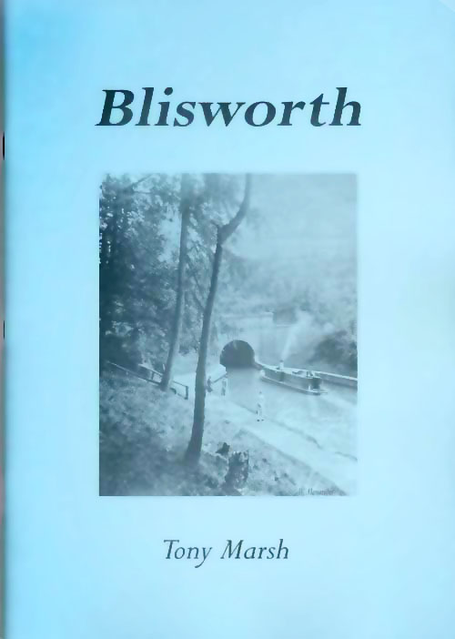
The Development of a Village
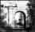Acknowledgements The chief justification for writing this book is that Mona Clyde Clinch’s “The Story of Blisworth”, although not inaccurate, takes a look at Blisworth with what seems today an old fashioned perspective. This is simply because of considerable social changes which have occurred since she wrote it in 1938. Over much the same interval of time the late George Freeston, our village historian, has accumulated a handsome amount of material which threatens with inundation any attempt to write a detailed history of Blisworth. Derek Bull recalls, “George felt that there was history in everything and that there were delights around every corner, if only our eyes were open to see them - and this is what he wanted to show us”. Without his work, the task would have taken many years.
For this somewhat personal interpretation I have limited the goal to an account of the issues which have shaped the village over the centuries, especially the 19th century, and added a selection of biographical details. There is also detail about the early names and roads of the village and a fresh look at milling and tunnel construction.
In no way is this a ‘last word’ and an apology is offered in advance for all those errors and omissions the readers will surely find. There are a few conspicuous omissions, for example; the history of our church, an account of our experiences in the war years and a more detailed account of the development of the railway. These have either already been written about or are expected to be so. I much appreciate the support I have received from villagers and their help in providing material, notably; Charles Holding, Sally Edwards, Brian Bodsworth, Colin Wakelin and Susan Blake. A small cohort of very generous people, having the appropriate expertise, agreed to check the manuscript to reveal inconsistencies in my grasp of English. They also made valuable suggestions for a better presentation of the material. Above all I thank Robin Freeston, Jayne Frost, Grace Alexander and Audrey Evans for their encouragement to use freely the George Freeston Collection (1996) deposited at the Northampton Record Office and some excellent photographs taken by the late Walter Alexander, our village photographer. [November 2004]
This is an Extended Version: An opportunity is taken to correct most of the errors in the original, which is now virtually out of print, and to include links to sections of the Blisworth Images Website (or the On-Line Archive - as it is now called). The most recent rather major upgrade to the text, providing new links to website articles, was early in January 2009. Relatively few of the figures and diagrams in the original are included. Those that are included are presented at low resolution. Where possible an appropriate image is indicated from the website. Regrettably, this version is not printer-friendly but the action of "Saving this page" should assemble the document correctly (but excluding the images linked from the website - see also "printing"). Anyone with comment or query are welcome - Click Here I am aware that the literary standard could be better, the account more detailed and the support by use of figures, especially maps, more thorough. However, without another expensive print run, its maintenance is perhaps best done this way. January 2006
Tony Marsh reserves the right to be attributed the author of this work, text, illustrations and diagrams.
Reproduction elsewhere is not permitted unless with written permission. [Tony Marsh January 2006]
__________________________________________
CONTENTS
2. The Romans and Anglo-Saxons
Water and Wind Milling Industrialisation
4. A Century of Changes
The Baptist Movement The Canal Limestone Quarrying The Railways Ironstone Opencast Mining
5. The Recovery
Schools Farming Historical Sketches Leisure
7. Status Quo ?
The book possessed a centrefold map which is available here
_______________________________________________________
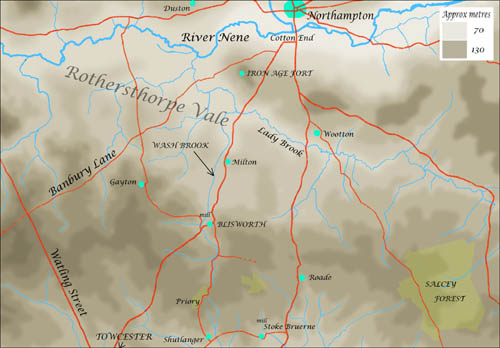 Blisworth is located on the northern edge of an extensive ‘peninsula’ of Jurassic limestone, known as the Northamptonshire Uplands, aligned roughly north-west to south-east with the River Nene to the north and the River Tove to the south. The peninsula is typically 130 metres above the present sea level and the rivers are at 60 to 70 metres, the landscape having been fashioned by early sea deposition, erosion and glacial action. The rivers accept a series of streams that generally flow from the uplands in individual valleys broadened by glacial melt waters. Referring to this region as a ‘peninsula’ seems justified in that if all global ice were melted then the sea would rise in from the east as far as Rothersthorpe on the north side and within 4 miles of Towcester in the Tove valley on the south - thus re-creating a coastal peninsula! In fact Rothersthorpe Vale has been an estuary at one time and contained large quantities of sand and gravel which was later washed out except in a few areas. One such area is around Milton where an east-west sand bar underlies the village and elevates it a few metres above the clay and gravel base of the vale. Subsequently a stream, known as Wash Brook, has cut through this sand in its northward flow to join the River Nene. In its descent from the uplands, Wash Brook runs through a long valley which has been broadened towards the west by two of its minor tributaries. The valley is quite narrow at its northern limit and it is there that Blisworth is located, between Gayton Hill and Cliff Hill.
Although no archaeological evidence has been found, it seems more than likely that prehistoric settlers would have populated the valley. There are many points which would make it attractive; the hills offer some shelter from prevailing winds and the brook flows constantly (and sometimes vigorously) to provide water for stock and the land. There are numerous springs which flow out from under the limestone beds to provide good drinking water without, initially, any need to dig wells. The main street, which became Bridge Street (and later, High Street), gently slopes down to the brook and would have served as an ideal open drain. Perhaps most important is the fact that any beacon to the north on Hunsbury Hill, where there was an Iron Age fort, would have been visible at the settlement. There was good ground to both the north and south for cultivating crops, thanks to Wash Brook’s alluvium, and there was plenty of scope for hunting in the uplands and gleaning berries and firewood from the scrub. There were dense forests in places and poles for building the earliest of huts would be easy to find.
The uplands are formed from a thick bed of limestone lying on a sandy stratum that has consolidated into sandstone. Some of this sandstone carries substantial amounts of iron compounds and is locally known as ironstone. In places, the iron content is so high that the rock cannot be worked. However it can be safely assumed that both limestone and rough sandstone could be found and worked as building materials - perhaps only to strengthen a pathway at first. At the Iron Age fort, where the ironstone again outcrops in a thick seam, evidence has been found for working the ore into a wrought iron by the ancient process based on a ‘bloomery furnace’. The discovery there of ‘currency bars’, a kind of iron bullion, apparently implies active trading with settlements to the southwest. Quantities of slag from iron smelting have been found and this is evidence that it was a substantial production centre for iron. The earliest iron-makers were probably considered wizards and it seems merely romantic to suppose that Blisworth had its own iron ‘wizard’. Advances in such technology are believed to have been introduced into Britain by Belgic immigrants who settled first in Kent and spread into the Midlands bringing with them advanced weapons, tools and ploughs of iron. They settled around Northampton and established the Iron Age fort on Hunsbury Hill, thought to be as early as 100BC. Along with the know-how for iron-making they would need a large amount of charcoal, no doubt obtained from coppicing in Rothersthorpe Vale, as well as clay for furnace construction to accomplish the basic smelting. Considerable blacksmithing effort would then be needed to refine a reheated spongy material into wrought iron by hammering out the slag.
2. The Romans and Anglo-Saxons
In their early campaigns, around 54BC, the Romans realised the Britons had iron and were fashioning swords that were perhaps crude by Roman standards - in fighting the Romans they “had to stand down from the battle line to straighten them” according to Caesar who might in reporting this have being trying to impress his peers. By around 60AD in their second campaign the Romans had settled in the Midlands and had crushed any uprisings. They had re-commenced iron-making at Hunsbury and at Duston and were stepping up production just as one would do in a newly acquired land with potential. Other Romano-British iron smelting sites have been found in Byfield, Corby, Gretton and Laxton with the likelihood there was also one near Tiffield.
Although the occupying Roman ‘chiefs’ probably did not live in Blisworth it is likely that small garrisons were stationed in many of the settlements, charged with the task of running and developing early industry. Evidence of Roman settlements have been found on higher ground near Blisworth - particularly the villa discovered in 1840 on Gayton Hill by a farm worker whose plough caught some underlying stone. This villa, with its artefacts dating to as late as 340AD, was very near the highest point of Gayton Hill. It has been recently realised that at the highest point there was also probably a Roman lookout station with some evidence of straight-line paths from that lookout to both Gayton and Blisworth. The centrefold map shows where it is thought the lookout path joins Blisworth from the northwest.
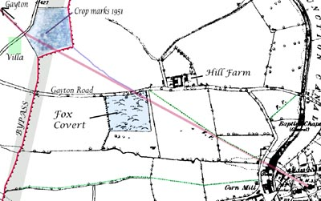 A 1951 Ordnance Survey aerial photograph shows crop marks on Gayton Hill. Most of these marks seem to be due to density or chemical variations in the soil because in preparation for a new road in 1991, the Blisworth bypass, no extensive structures were found there. What was found nearby was a course of stone identified as a Roman corn-drier - a container and a hearth measuring a few metres. A photograph of it taken by Peter Butcher can be found from the link above. In this figure, the position of the villa and the crop marks are shown (the corn drier's position was a short distance SE of the crop marks) and a line is drawn from the site to the village church tower. That line passes along the jetty between the Sun, Moon and Stars building and the neighbouring houses. It is also perfectly aligned with the byway that runs as a diagonal through the small field opposite the “Tunnel Boats” yard. The path is show on the oldest maps (1727, 1800 and 1838) as a pair of field gates and the jetty is represented by a line. On the theory that a Roman garrison was centred where the church is now, the line suggests a Roman track running directly to a lookout. At the hilltop another line can be projected to the site of Gayton church and it is perfectly aligned with an old hedge boundary between fields which has been grubbed out. In the map is also traced the present byway in green as it joins the Gayton Road. It seems to have been moved to avoid some ironstone workings in Fox Covert. The aerial survey has been image processed and has revealed a casual path (shown in blue) at least in use in 1951 that starts ‘on the line’ at the Gayton Road where there must have been a hedge gap. All these points suggest there was once a straight-line path across the four fields. Incidentally, there is absolutely NO right of way across the field nearest the hill top - only the proper byways formalised in 1951, shown in green, may be used. Furthermore, the site of the villa was covered in 3 to 5 metres of topsoil when the bypass was being made.
At the opposite end of the village, one can stand half way along the path to our playing fields, where there was once a windmill, and note that this path is also in line with the church tower. Maybe this is a significant alignment to another lookout on Cliff Hill. During the excavation of ironstone before 1900 some Roman remains such as ornaments and coins were found somewhere in the vicinity of the site of the windmill.
Straight-line tracks to lookouts suggest garrison occupation at an early military stage and the villa is dated as 340AD. In other words, the Romans were probably at Blisworth continuously! There is also evidence on record of Roman enclosures and possible small settlements to the north at the boundary with the Milton Parish and to the southeast towards Tunnel Hill. Another site of Roman nature has been discovered near to a medieval limestone quarry. Much pottery has been found but the site is on the edge of the quarry and is therefore unlikely to be satisfying to a research archeologist (grant for geophysical survey unlikely!). There is an aerial picture of the quarry on the website.
Throughout the area the Romans of course developed the roads and it seems likely that the Banbury Lane would have provided a route between the Watling Street and the fort. It is also likely that before the Romans, from the earliest times, a trading route running south across the uplands would be required. Wash Brook, in its valley, provides a very gently graded ascent to the highest uplands and, via what is now Shutlanger, a path would have led to Towcester through what has become the landscaped park of Easton Neston. In other words the main pathway through Blisworth would have followed the direct road from the north and then would have taken either South Street or the Back Lane leading to Nun Lane. The dominant use of Westbridge Hill that would lead directly to Towcester probably came later; it is a somewhat steeper grade and intersects no villages. As the road from Northampton enters ‘Blisworth valley’ it does not proceed straight to where it must either ford across the brook or follow its path. It first takes higher ground to the east because there is insufficient room for a road beside the brook in the narrow valley.
After the Roman military divisions had left in 410AD there were many Romans or Romano-British who preferred to stay. As a legacy, the Romans left many roads - not only the obvious ones such as Watling Street but also a series of feeder roads, or cross roads. The Banbury Lane has already been mentioned but another road in the area ran from Shutlanger to the southern edge of Towcester and continued across the Watling Street towards Silverstone. These feeder roads were of value in collecting produce from the settlements - indeed the Romans encouraged trading and set up a weekly market in Towcester. There is another road which ran through near to the village known locally as the Salt Way. It is now frequently said that the remaining Romano-British, after the military Romans had departed, were essentially sophisticated “Romans”. Those in Blisworth would doubtless have been relieved to see the military Romans depart. Unfortunately, they all would then have to survive first a plague in around 440AD and then put up what resistance they could to waves of Anglo-Saxon invaders, over the next 200 years, or be driven westward into Devon, Cornwall and Wales. This has been the conventional view but recent archaeological evidence, mainly from eastern counties, suggests a more amicable and trading inflow rather than invasion. If this is correct, a transition from Roman to Anglo-Saxon culture involved intermarriage and absorption of new fashions over many generations.
It is from the Anglo-Saxon times that Blisworth got its name and the parish its boundaries. The name was thought to have derived from Blide’s Worthe or Blioe’s Ward - meaning a settlement or enclosure belonging to Blide or Blioe. However, recently it was realised that the word "blide", pronounced blithe, is in use in Orcadian dialect to mean happiness or well-being. To have described the settlement as happy in the Domesday records seems much more plausible and the name descending as bliss(ful) totally consistent. It is fair to say that the settlement relied mainly on agriculture and husbandry. The availability of building stone and ironstone in the area would help stability. The Anglo-Saxons built mainly with wood and apparently denuded many forests between 750 and 1000 in what has been described as a mini-industrial revolution. Salcey Forest (salcey = ‘willow’) was not declared King’s land until around 1200. At a much earlier time the forest probably extended westwards across all the uplands and the careless clearing left a motley selection of fields, scrub, and a few isolated woods near Blisworth. The Anglo-Saxons also built with stone but little survives today. The earliest indication of stone used for building in the village comes from the 14th century ‘buttresses’ of the parish church tower. The remaining oldest buildings are of the 17th century and often characterised by a banding in the stonework courses where ironstone and limestone are used alternately. The banding has become a local building fashion (see page 18) which is repeated in a few buildings elsewhere in Northamptonshire.
The Norman survey of 1086, the Domesday Book, lists Blisworth as having land enough for nine ploughs (roughly 800 acres) and implies there was a population of about 120 people. There was also a mill yielding only two shillings and was therefore recognized as tiny. In c. 1700 there was certainly a watermill just north of the village and it is tempting to assume that a watermill had been in service in the same place for 700 or 800 years. This cannot be certain for reasons given later in this chapter. It could be that the earliest mill was a horse or ox-driven affair.
Parts of the present day church appear to date back to the 13th century though it could have been established much earlier than this, maybe in the 10th century, and was repeatedly rebuilt. The detailed history of the Manor of Blisworth (ie. the parish) is given in the Victoria County History. Initially the manor was given to William Peverel (son of the Conqueror) and was passed to his son, also William. He then forfeited the land for treason in 1157 to a Robert de Peissi. Around this time, the Cistercian Priory at Sewardsley (now Showsley) was established in the woods south of Blisworth and this accounts for the name, Nun Lane, for the path running south and, over much of its length, following the course of the brook. We now call this upper section of the brook Fisher Brook, being a corruption of Fish Weir Brook. The priory was administered by Delapré Abbey from 1450. It would probably have served as a sanctuary, a source of education and spiritual guidance for villagers - an alternative for some to that available within the main settlement. The manor passed down through many hands in the following years but by the time the Wake family was established in 1276 we know that the manorial residence was in Blisworth. Most barons of this unsettled time kept a group of retainers and in some cases this would amount to a significant army. No one knows how big Wake’s militia was but it was presumably housed in the manorial enclosure. Blisworth remained the seat of the Wake family until 1504 when Roger Wake died. There is a tomb and some brasses of Roger Wake in the church and he is depicted with a full suit of armour. Blisworth was fortunate in that Roger Wake provided an endowment for a school in the village. Although children would probably not be schooled much beyond the age of eleven the availability of the church school and a prestigious ‘free school’ would have stimulated some enterprise and curiosity in young villagers. In 1523, the manor (ie Blisworth Parish) was sold to Sir Richard Knightley of Fawsley. He is noted for apparently attempting to prevent villagers from using the upland common land for grazing and the woods for firewood and building material but he later quietly withdrew the restriction. The common lands, by a traditional right, were grazed collectively by villagers’ animals and were vital to family economy - indeed their only source of fuel. Some of the old names for the woods, such as Thorp, Sale and Kings, and of coppices, Goldburn and Long Quarter, are reflected in farm or field names today.
Until roughly 1550 the two field or three field feudal system of agriculture was practised everywhere throughout England. This is where each family is given strips of arable land to cultivate for food in as best way they can manage. As time went by a family would acquire, or share, oxen and a plough to till the ground. By always running the plough in a repeated spiral pattern, farmers would gradually push their soil towards the centre of their strip and so create the ‘ridge and furrow’ profile in the fields. An aerial survey photograph of Blisworth taken in 1951 shows many acres patterned in this manner and, to the north of the village today, much ridged grassland remains. There is evidence of a north, west and a south field. In archaic measurement units, the cultivated strips were 40 rods long by 4 rods wide. As a rod was standardised from a 5.5 yard long light pole, the longest pole that could be carried by hand to tap the oxen and so control their path, we find that the length of the strips or furrows was 220 yards - 1 furlong, ie. one furrow long. The area of one strip was just one acre - supposedly that which could be ploughed in a day.
In 1542 the ‘Honour of Grafton’ was created by Henry VIII and Blisworth Manor was incorporated into it. The priory, along with all monasteries in England, was suppressed by the king but by then there were only five nuns with the prioress! It became known to landowners around 1550 that they might earn more from their land if larger fields were established. The temptation was resisted for 50 years but in the early 1600’s field enclosures began under Sir Robert Cooke in Blisworth. The new fields were created with a system of ditches and newly planted thorn hedges. The idea was that villagers would farm each field collectively and efficiently grow one crop in each. This caused much unrest, indeed violence. This was the time of the ‘Levellers’ who massed sometimes in hundreds out over the newly hedged and ditched fields, tore up the hedges and filled in the ditches. The response across Northamptonshire was patchy - some levellers were hung, drawn and quartered for their deeds. The result was that only some enclosed fields were created at this time - the complete switch from the feudal system was to wait another 150 years. However there was considerable indignation when the few enclosed fields were set to pasture since the initial cost for any herds or flocks to graze them was within the pockets of only a few. Meanwhile everyone in Blisworth was likely to be pre-occupied with the civil wars in which, at one point, the opposing armies were encamped at Northampton and Towcester. For 200 years from the reign of Henry VIII, the Navy’s demand for timber was so extreme that many of the forests again became denuded. Those in Northamptonshire, especially Salcey Forest, were spared the onslaught because timber could not easily be shipped from there to the south coast where most of the shipbuilding was concentrated at that time. About this time the use of charcoal for iron smelting was discouraged to let more trees reach maturity.
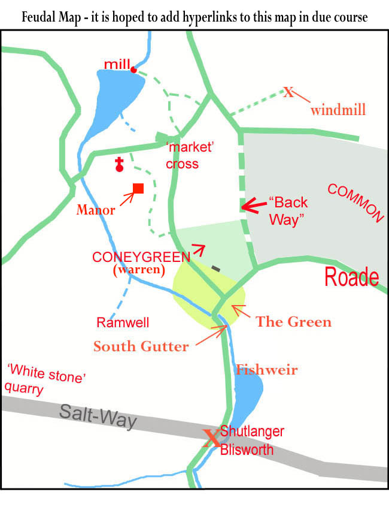 In 1675 the Manor was bequeathed to Henry Fitzroy who was honoured by the king as the first Duke of Grafton. He therefore became the owner of Blisworth and much of the land around it. Successive Dukes managed the parish with much sympathy towards villagers until 1919 when most of the estate was divided up and sold - often being sold to any sitting tenants at the reserve price. The earliest surviving map of Blisworth was drawn up in 1727 by the Duke’s agents in order to manage the tenancies but there is no reference to a manor house in the village.
Regarding the 15th century Blisworth Manor that was occupied by the Wake family, its site has been supposed to the north of the church, according to the oldest Ordnance Survey map. The mapping of this area took place around 1835, when a converted tithe barn rented by Benedict Roper occupied the site. The map was not drawn at a sufficient scale to show "Manor House" at that place until 1885. The survey was carried out by qualified soldiers - thought by some to be a contradiction in terms when they began their protracted work but, in fact, they were from Companies of Royal Engineers and Miners. An archaeologist with them was charged with the task of keeping up with their theodolites and discovering items to include from learned tomes, the civil authorities, the landlords and church officials. There is nothing in the church terriers about what may have occupied the site before the tithe barn, which was built in the second half of the 18th century. There is nothing definite in Bridges "History and Antiquities of Northamptonshire" (1791). In there, the manor is merely stated to be once near the church and have a park and warren associated with it. Similarly, the Grafton survey of 1705 associates the house with a park and warren. Both are to the south of the church, so how did the Ordnance Survey come to place the house site to the north?
A document recently found in the NRO is more helpful however. It was written as notes by Wm. Taylor of Heyford and was used by Bridges is his compilation. Taylor visited the parish around 1718 and consulted the curate, Revd. Mr Bullyer who told him that there was "just one seat in the parish in which Mr Plowman now lives and was formerly the dwelling house of Sir Robert Wake who owned the whole town - it is now upon ye Duke of Grafton's hold". This clearly indicates that, in 1718 at least, the grounds of Blisworth House were considered the site for the 'seat' of the Wake family. There would have been scope there for accommodating his retainers in a classic ring-fenced enclosure, when visiting Blisworth. However, the maps since 1727, the earliest we have, show a succession of barns and stables built and demolished over the years and do not hint at any substantial building. No old stone foundations have been found there within living memory. Regarding Robert Wake, perhaps the Reverend Bullyer meant to say Roger Wake. There was a Robert Wake who might have rented a house from Sir Charles Knightly of Fawsley (purchaser from Wake's widow) as late on as 1570 - but no Wake since Roger in 1504 "owned the whole town".
At any rate, we now know of a documented reference to Blisworth House (or the grounds there) as the place where the Wakes had their "Seat". It seems that the Ordnance Survey had got it wrong. There are no documents from them - all except those relating to a handful of counties were lost in the Blitz. In the 1830's, the surveyors would have Taylor's notes on arrival in Blisworth and would be keen to mark up the old "seat". But the 1702 Plowman date stone at the door of the house was covered by a large stone porch in 1825 and the last farmer Plowman, a William, had sold up by 1779. He, or his family was living in the house that has been later named "Plowmans" by George Freeston. The rector, Revd. Ambrosse, was probably absent and may well have been in prison, thus not available to help. A reasonable conjecture is that someone indicated the fields that Plowmans farmed in the previous century, ie. Pond Bank, and the surveyors "just took a stab at it" knowing that the Gibbs family farmed there at the time and lived on the High Street nearly opposite the church.
The low lying land, known as Pond Bank, would have backed the Manor if positioned where the Ordnance Survey supposed. This in turn would mean that the supposed seat there would be low-lying, which is very unlikely in being less defensible. Some of the low lying land was deliberately flooded to form a pond that would have served as both a manorial fish pond and a millpond. By 1727 most of the millpond was somewhat silted up and had been drained again and converted to meadow. Surprisingly there was still a milling business in 1727 using a tiny pond serving an overshot water wheel, see the next section.
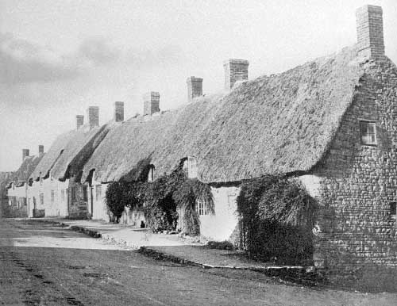 From the appearance of some 16th and 17th century houses that still stand in Blisworth, some of which were condemned and destroyed in the 1930’s, it is possible to build a picture of a typical street scene. Houses with some status were built with a gable end-on to the street; four still stand in the village. A yard beside such a house would have stables and maybe a well, maybe sheds from which a business was conducted, most probably a farming activity but also blacksmithing, baking or butchery and perhaps shoemaking. Labourers’ houses would either be terraced along the street, with essentially a one-up one-down layout, or grouped into three short terraces around a shared water well in a tiny ‘court’ with access to the street. A less common layout in Blisworth, but common in Northampton, was based on a back-to-back arrangement of simple terraces. All houses used an outside earth privy, often shared, and some villagers would need to walk around the end of the block to gain access to it. All houses were thatched and many of the poorer houses had very low eaves where the upstairs (up-ladder!) rooms possessed no window as in this picture taken by W. Alexander. The streets were bare ground in the 16th century and perhaps were kerbed in places with stones so that drainage was kept tidy for most of the time. In Blisworth’s streets the ground was either ironstone or a rocky clay below it - the Roman technique of using crushed stone being forgotten. The lower parts of Mill lane and Bridge Street were on yellow or blue clay - making for very difficult passage for a horse in the winter. Because of the substrate, the condition of the streets in the village was probably quite good - much better than country roads which were reported to be rutted to a depth of two feet. Before road tolls were levied to raise money for repairs, there was a Statutory Labour Act in force that required that every man spend 6 hours a year working on road repairs - that is roughly equivalent to half a man labouring continuously in daylight hours somewhere in the Parish of Blisworth! By the 18th century, roads were covered with layers of crushed stone and after around 1850 many major roads had been crudely filled with tarmac.
The 1727 map shows that two thirds of the parish were enclosed fields let by the Duke of Grafton. The rent books show that all the identified fields are associated with a house in the village, sometimes many fields to one house but often just one. It is evident that the Duke of Grafton was a diligent landlord. He maintained the houses and charged rents that, in some cases, were so tiny that they served merely as an acknowledgement of a tenancy. In around 1757 he charged no rent from about 20% of households and, judging from the map, he regarded fields north of Mill Lane as common land, likewise for many of the fields adjacent to Nun Lane and to the east of the village. There is no mention of rents for a few parcels of land which implies that they were either simply freehold or the work undertaken was solely on behalf of the Duke so that rent would be part of the consideration. The mill was one such parcel. About 300 acres of fields to the west were glebe land, owned and managed by the church from 1812. Before that time the church had a total of 20 acres in a dozen small plots scattered around the parish. There was income from the tithes. For centuries all workers provided a tenth (a tithe) of their income each year to the church. Tradesmen would pay in money or kind, farmers usually paid with part of their harvest or part of their herd and in a few cases stewards of the church would need to reap the due levy forcibly. The church funds were used to support the poor, pay for the running of church schools and factories and the substantial costs in maintaining buildings. When tithes were commuted because of their unfairness, the Duke of Grafton must have decided that a fair subtraction from the Blisworth parish would need to include an allowance for some other, smaller, parishes in his estate - hence the substantial award of 300 acres out of approximately 1600 acres. There was a duty to support the church and everyone strove to afford it. It was fundamental to rural life - being the source of social order, ethical teachings, biblical interpretations and reassurances available to everyone in the village. The forerunner of the parish council, the vestry meetings, also supported those who applied for relief. They were generally paid in the form of cash, coal, clothing or bedding. In 1826 for example, nearly half the population registered in Blisworth for help. Funds were collected from people in the village with freeholds - which must have been limited.
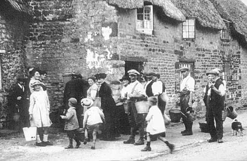 In the centuries leading up to 1800 all farmers would live in houses in the village. They possibly rented an adjacent homestead, usually for stock and storage, in addition to some outlying patches of land. North of a rough patch known as the Warren, the area between South Street (ie. Stoke Road) and Back Lane was divided into east-west strips from which stock could be turned out onto the common land to the east. Once the millpond was drained a similar configuration may have applied to the north of Bridge Street (High Street). The picture was one of complete integration of all trades into the heart of the village. Until the end of the 1700’s the main work was farming, both arable and stock keeping, along with the trades obviously needed to support farming such as blacksmith, cobbler, carpenter and so on. Along the streets late in the day you would be likely to come across occasional escaped hens or pigs. There would be oxen or cows being brought into cover and families would be tidying up their ricks of hay and corn stacked adjacent or just behind their houses. While arguments would no doubt be continually breaking out, there would be a strong spirit of inter-dependence amongst the folk. Neighbours would mass together to get a job done. They would be constantly meeting at the village pumps, the alehouses of course and the bakeries where the still hot ovens would be put to good use cooking evening meals. A farmer might also be a part-time carpenter or builder, a blacksmith might branch into wheel-wrighting or veterinary work or even dentistry (he had the tools for tooth extraction!). Wives would weave, make lace and clothes, keep chickens and pigs as well as collect and prepare food - all of this fitting in with the job of raising a family.
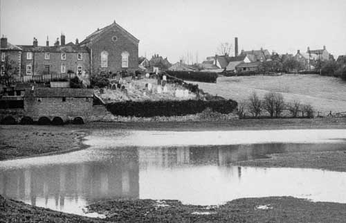 The potential of Wash Brook as a basis for a watermill does not seem sufficient, especially in the summer months. To understand this better, its course has been surveyed with reference to contours and benchmarks published by the Ordnance Survey. The complete course cannot be surveyed because of the canal constructed c. 1800. However the two halves that can be surveyed fit together with a steadily descending profile that would be expected for a mature river bed. Two conclusions arise from this; (a) the height of the stream would be 90 metres near West Bridge - the same as the canal and (b) the depth of the stream before being dammed at Mill Lane would be 4 metres below the road. The first of these pointers suggest that the lowest level of Arbutts Lane (Gayton Road), near to the canal, would be alongside a ford leading to the centre of the village. The second is remarkably borne out in a note made by George Freeston as engineers were installing a large culvert in the 1960’s to drain Pond Bank “.. found iridescent fresh water muscle shells at 13 feet - this must be the old stream bed” . If a headrace for the mill wheel was a little below the present level of Chapel Lane then the mill pond was originally 3 to 4 metres deep at the north end. This photograph of the old millpond field at a wet time shows that it was roughly levelled by the accumulation of silt. It was not totally filled with silt - it can be seen that its contours were bowl shaped - and this implies that water could still have been taken for the mill wheel despite the silt. A milling session would have merely used the uppermost six inches of water before waiting for the pond to refill. But at some time before 1727 the mill pond was reduced in size to merely 20 metres by 100 metres if a 1727 Grafton map is to be believed; that is a reduction by a factor of over ten compared to the size of the field. A milling session taking six inches of head would then have lasted less than 1 hour and the mill would not have been viable; at least, not viable unless re-built with a series of timber boards to maintain a continuous flow as successive boards were removed - the miller would have been running out to remove another board every half hour!
The only way the millpond could have been reduced in size would be by laboriously digging out a new course for the stream through the silt and digging out an area near the mill. However, why do this and partly disable the mill? The only reason that seems sensible is that the Duke of Grafton wanted another field, and a particularly valuable one, to be available for farming. To allow a continuous milling operation he must have set up a windmill at some time before 1727, presumably on Cliff Hill. There is useful information in the wills of Blisworth millers held at the Record Office. There was a Mr Symson, miller, 1650, a William Dent in 1704 and his son John Dent in 1730. A Richard Dent appears on the census for 1841, miller aged 70, and in fact Dents can be found, mostly agricultural labourers in Blisworth, right up to 1901. Intriguingly, John Dent’s inventory that is attached to his will indicates he was the owner of some “sail cloaths” and that property item relates to “in ye mills” (plural). The full item reads, Item - in ye mills, ye toll corn - two sacks (these being an accumulation of miller’s fee), ye sail cloaths, ye mill bills (a bill is a hard stone or steel tool for dressing the grooves in millstones), ye bushells (these being 8 gallon measuring containers) and lumber there (miscellaneous timber) - £1/14/9.
In the 1720’s, it appears that John Dent, Richard Dent’s grandfather, was using both the water mill and a windmill - the sort that have sails covered in cloth. Further evidence for this is shown on a c.1821 map where Richard Dent is favoured with the rights to a path to the windmill on Cliff Hill. It follows that the removal of the water by the canal construction in 1796 was not the cause of a diametric switch to wind milling, contrary to what is often assumed.
It seemed there was an opportunity to estimate when the dam was first put up across Wash Brook. The amount of silt can be estimated from the shape of the original streambed and the water catchment area for Wash Brook can be measured from an OS contour map. The result is that the erosion into silt, since whenever the dam was built, looks like an average of one or two inches over the entire catchment area. That is insufficient silt for the stream to have been originally dammed in Roman times. Likewise for the Norman times, there is hardly enough silt especially as we know the south field was cultivated, releasing more silt than otherwise, before 1700. So, was the 1086 survey for the Domesday Book referring to a horse or ox mill yielding a mere two shillings - as compared, for example, with Milton’s windmill yielding 30 shillings? With the unpredictability of rainfall and winds, early millers would have to be ready to seize any opportunity. Farmers and families would tend to store their cereal “as cut” in a thatched rick raised carefully from the ground and be ready for the next milling job working to some kind of rota for the village. There would be a minimum of cereal stored as flour especially as it would take up too much room in the small houses and be more liable to rot. A review of the milling history of the village has since been completed.
While Blisworth’s lifestyle continued relatively unchanging, the industrial revolution gathered pace elsewhere. In just about every manufacturing endeavour, man was becoming more ingenious in the use of tools, more precise and, above all, more willing to share a description of their technology with others - the age of the wizard was ending. The British Empire was reaping a magnificent harvest and those who were accumulating this wealth were able to pour risk-money into dozens of ventures thus promoting rapid progress as well as some occasional costly lame ducks. The development of steam and iron-making, however, were key success stories. The latter took a major step forward with Abraham Darby’s first blast furnace in 1704 at Coalbrookdale in Shropshire. It achieved higher temperatures using coke and an air blast. With a limestone based additive much of the impurities in the iron were extracted into a liquid ‘flux’ and as the iron melted en masse it flowed to the base of the furnace and could be tapped off and made to flow into dampened sand moulds. The molten limestone mixture was then drained and solidified, broken up and collected in “slag heaps” where it accumulated for more than 100 years until a use was found for it - it was to be crushed and used in road building or just landscaped into many banks and hillsides. The production process was continuous in that, while still warm, the furnace was re-stoked with a mixture of iron ore, coke and limestone and the cycle repeated. The next batch of molten iron was drained into moulds running adjacent to the first which were, by then, cool enough to be lifted out so that new moulds could be made. This was the basis for Darby’s continuous production of iron in large quantities - an iron whose impurity composition could be tuned for different applications. By 1725 iron founders were casting large components for the early steam engines and, of course, better cannons for our Army and Navy. Coalbrookdale is also famous for its cast iron bridge across the River Severn built in 1779 and constructed in a manner reminiscent of woodwork. Lest one should think that the output of the industry was directed only at engineering, by 1790 there were many diverse objects being made at Coalbrookdale, such as some beautifully slender 15 foot high iron casting for church windows. Their iron "mullions" are two inches wide which promoted greater light in the church.
Darby was fortunate in that he could sink a single mine shaft in his home yard and, at different levels, extract all three major raw materials: coal, iron ore and limestone. His achievement is generally cited as the start of the industrial revolution but James Watt’s radical improvements, in 1770, to the primitive steam engines of the 1710’s were just as important if not more so - a worthy partner to the iron.
An enormous strain developed on Britain’s roads despite the tendency for manufacturing industries to be set up near to sources of raw materials. The horse drawn cart was hardly adequate for moving in a criss-cross pattern all the goods for the nation’s industry but the horse drawn canal-barge with its almost frictionless motion was regarded as a God-sent idea since one large horse could tow 30 tons. As detailed in the next chapter, this need for canals introduced the village to the pace of life elsewhere. Within a few decades there was a blast furnace set up only five miles from Blisworth at Hunsbury.
In chronological order, the first event to shape lifestyle in the village was the coming of the Baptists. They became established in 1780 in Blisworth with John Goodridge, a farmer, as the first preacher. Meetings were held in their homes until the Duke of Grafton provided one of Robert Campion’s barns for services in 1787. A Sunday school was started for children which grew to a class of 60 and a plot of land off Mill Lane was purchased in 1825 to build a meetings house. Baptists were known in Northampton and Newport Pagnall from around 1650 and it is thought that John Goodridge’s father originated from a Roade group formed in 1688.
For hundreds of years the parish church had been a cohesive force in the village and there can be no doubt that the village owed its moral strength to the church. However when the Rev. Trotter died in 1797 he was succeeded by the Rev. Ambrosse who was the rector until 1839. Rev. Ambrosse was notorious in being absent for long periods, allegedly enjoying himself in France in an unseemly manner and sometimes not giving a sufficient account of the distribution of church funds. There can be no doubt that the Baptists found it relatively easy to promote their cause while Rev. Ambrosse was absent.
Seen simply as dissidents, the Baptists were not liked by church people in the village. There was a strange and almost ‘possessive’ rift between the religious groups. The Baptists found it difficult to make headway owing to this attitude - for example, the Duke’s agent, a John Roper, would not help with a supply of stone from local quarries and the new meeting house, later called the Chapel, was built in brick. The Duke of Grafton, hearing of this and other problems, insisted the villagers live peaceably together pointing out that the Baptists were as good tenants as anyone else. Years later John Roper was severely censured by the Duke over many other issues. By 1880 the original meetings house was enlarged with a part stone front elevation. A school lecture hall and Manse were also built. The Baptists were forced to run their own school because the church school in the Stoke Road was barred to their children.
Early in the 1800’s the Westley family, Baptists and millers, arrived in Blisworth. The story of the expansion of their milling and baking business is told alongside that of other village trades in Chapter 5. A fuller picture is provided elsewhere on the website. Notable, however, is Joseph Westley who was born in 1821 and built up the milling business, continuing after his mother and grandfather. He built many houses for workers in the village. As well as supporting the Baptist movement, he eventually succeeded in becoming a churchwarden of the parish church. He was clearly a charismatic figure, capable of pulling a village community together.
The growth of two religious houses in Blisworth early in the 19th century must have contributed to the village’s moral strength and ensured that less harm was done by the subsequent massive social and economic changes which are outlined in what follows. Rivalry between church and chapel is now a thing of the past. However, as a conversation starter in 1968 when this author moved to Blisworth, “ .. and are you church or chapel dear?” would occasionally be heard, in the nicest possibly way!
Arising directly from the needs of industry, many canals were planned and built but the one that concerns us is the Grand Junction Canal projected to join London with Birmingham. If a path could be found which called for a reasonable minimum number of locks, which cope with height changes, then surely the problem was simply to dig it and fill it with water! Any streams intersected on the way would provide the water to maintain the canal, the chief loss being in operating the locks for one or two barges at a time. The surveyors were sent out in the late 1780’s to find the best path and when presented with the Northamptonshire Uplands, standing roughly 40 metres higher than their ideal level, the surveyors realised they would have to choose a place to tunnel through. There were weeks of field surveying and negotiations with the landowners. Three likely paths could be identified, looked at from the north; start tunnelling just west of Gayton and emerge south east of Tiffield, start at Blisworth and emerge at Stoke Bruerne or take a long way around and either create a flight of locks or a tunnel near Roade. Of course, the one considered best was the second one. The Tiffield route was short but would involve two landowners instead of just one and would require new roads to any wharfs at the tunnel entrances. The Roade route was just too long. With recommendations made, Parliament passed an Act for the London to Birmingham Canal in 1793 and work began at each end, being organised to use gangs of over 300 men.
The gangs would dig around 500 to 1500 yards at a time along a contour line. Wherever possible they would either distribute the soil on the neighbouring fields or use it to build a rampart on top of which would run the towpath. As with road building, the path taken would be such as to minimise the amount of soil to be moved parallel to the trench. The trench was coated with a layer of soft clay ‘puddled’ into position to serve as a water seal. Lengths were filled with water up to temporary dams and the positions of these dams were determined by the location of any streams that were to be intersected. Bridges were built onto wooden formers using bricks both fired locally and brought along the canal behind them. The digging was done entirely by men with shovels and wheelbarrows. Members of the gang were know as navigators, or ‘Navvies’ - they were itinerant in that they followed the work, becoming separated from their families, willingly or intentionally. They slept rough or in tents and were fed at the workplace.
The main contractors in charge of the building were James Barnes and William Jessop, both widely experienced engineers though it is said Barnes could neither read nor write, and the finance came mainly from the Duke of Buckingham.
Following a contour, the canal cut through a part of Blisworth’s north field and was taken around the edge of the drained area which was once the millpond. They needed to make sure a bridge was built so that Mill Lane could be joined to Arbutts Lane before the little bridge over the brook at the end of Bridge Street was taken away. Road traffic could then use Mill Lane (Chapel Lane) en-route from Towcester to Northampton. They dug a channel for Wash Brook to make sure it continued to flow towards the water mill without pouring into their diggings. Having got to around 40 yards past Bridge Street they created wharfs on both sides and rebuilt a very much larger West Bridge. It was then possible to divert the brook into the diggings to complete another length of canal.
On arrival at Blisworth in September 1796, Barnes laid off most of the men but kept a force of 50 to explore what was required for the tunnel. The shock to the villagers must have been immense; they found an idle gang of men on their doorstep in numbers larger than the number of men already living there. There is no record of what may have happened as this gang dispersed but clearly the villagers would not be able to get into any of the alehouses for a while. Anything that could be stolen probably was - it is doubtful that Barnes would have continued to feed the laid off men.
At about this time the contractors working towards Stoke Bruerne were still south of Cosgrove. There was a few miles before arriving at Blisworth Hill and there was a flight of 7 locks to build. As in the case of the northern start on the tunnel, diggers began in advance in Stoke Bruerne.
Even without the tunnel, the canal could be opened based on two separate sections if a good road was constructed between Blisworth and Stoke Bruerne. The Duke of Grafton agreed to the road provided it kept to the ‘Parliamentary Line’ with an easement for one farmer. The road was finished and made a toll road in 1797 and freight could now be loaded onto horse-carts that would pass up Bridge Street and South Street, the south end becoming known as the Stoke Road at about that time. In the same year, in anticipation of the heavy traffic, the Towcester to Northampton road was made a turnpike with a tollgate by the church. The idea of tolls was to raise money for road repairs but sadly all the roads in the area would soon collapsed into worse clay ruts and large puddles. At the Blisworth end of the canal there was traffic to flow out and in from three directions; Towcester, Stoke Bruerne and Northampton. The traffic was predominantly freight, for example; coal, flour, cereals, timber, slates, iron, bricks etc. and Blisworth had become the largest inland port in England. The only good thing about this for the villagers was that tradesmen would do well and even farm labourers might aspire to branch out and start a trade. No one appears to have anticipated the level of traffic immediately put onto the canal and the problems this would cause while the tunnel was being built.
But problems for Barnes’ tunnel were yet to come. The sub-contractor with a small gang, beginning in advance, had extended southwards into the valley whilst keeping the brook in its channel to the east (to their left). They began to dig the s-shaped deep excavation towards the agreed position of the tunnel opening but encountered difficulties. It is not too clear exactly what the trouble was but it seems likely that the first agreed line was abandoned in favour of a longer tunnel which was to be aligned with the bridge to the north. The plan then became a straight section of canal to the tunnel mouth, the subcontractor that was responsible for the failed first line being sacked by Barnes. Subsequently, this second line also was met with difficulties and the canal company insisted that Barnes call in engineering consultants to sort out what to do next. The possibility of taking a flight of locks over Blisworth Hill was seriously considered, as was an idea to try tunnelling in a different place. Any flight of locks over the hill would require a reservoir at some intermediate height, filled with water from Fisher Brook (the uppermost section of Wash Brook). From the reservoir, water would have to be pumped to the uppermost lock using a continuously running steam engine. Some suggestions, with recent survey findings near Stoke Bruerne, on the phases of the engineers work may be found in an article on the Blisworth Images website.
The state of the roads was becoming parlous and Benjamin Outram, a partner of William Jessop in owning an ironworks in Derbyshire, was commissioned to build a narrow gauge tram railway, to be drawn by teams of horses, from the wharf at Blisworth to the one near Cosgrove. The line was in fact only taken as far as Stoke Bruerne, but south of the locks there since progress was good in digging the stretch from Cosgrove. The hill railway was completed in 1800 with crane equipment at both wharfs to transfer the freight to and from the railway. The disruptive traffic through South Street then ceased. Much has been said about this pioneering railway and its archaeology testifying to its unique construction based on cast iron track sections and stone sleepers (see image 22-09). Thankfully it was an aspect of the whole tunnel project that was built on time and worked first time!
Between 1798 and 1801 the tunnel project must have seemed doomed to failure. It is not clear what was being done in these three years. At one point Barnes was given a deadline of June 5th, 1802 to finish the job. That was roughly when he actually restarted the main work. It was resolved to revert to penetrating the hillside another 200 metres into The Park and shift the line towards the east - in fact to conform with the original parliamentary line more closely. With their experience of the volume of water that the stream was capable of, this would require that the stream be diverted to the west so that it would safely pour into the dig that was already completed.
As a distraction for Barnes, in 1798 he was ordered to help the embarkation of 1700 troops at Blisworth to travel north to Liverpool, a four-day journey. Their task was to quell the Irish uprisings. Thirty barges were needed, assembled as a fleet, along with about 10 tons of timber as planks enabling the soldiers to sit down. Written into the Act for the canal was the provision for free travel by the military. This task recurred during the following three months until a total of 8000 men plus equipment had been moved. The canal company must have wondered if they would ever be allowed to settle down to business. In 1809 there was a military ‘Domesday’ count of available barges on various stretches of canal; there were 130 on the Grand Junction, so future ‘operational excuses’ made by canal companies could be parried. The military were given a wave through at every lock; serious disruptions occurred repeatedly until the 1840’s when the railways began to take over.
Returning to the construction, up to this point the depth of the cut on the east was about 4 metres and on the west around 6 metres. Now a “deep excavation” extending into the hillside was required. It would take the depth eventually to 13 or 14 metres and would obliterate the pleasant Green, lined with fine trees, known as Goose Green to villagers (South Gutter Green on some of the Duke’s maps). This was yet another environmental blow to the village but Barnes was instructed by the canal company to proceed once the Duke of Grafton’s permission was given. The method of getting the spoils up the steep banks was to tie wheelbarrows to horses and have a man run up an 11 inch wide bouncy plank while guiding the barrow. It is not recorded how many men were injured in this line of work and there is no mention of how far away the spoils were moved before being dumped.
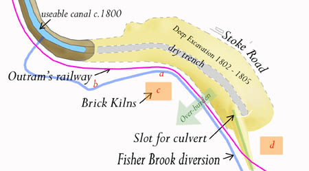 Before embarking on the deep excavation, it was necessary to cut a new course for the brook. Up to then it was passing the dig to the east but it would be made to switch sides. The Waterways Trust possess no plans of this revised approach so it is necessary to piece together what evidence there is. In a nearby hedgerow around the western edge of "The Park" there is a dry streambed. The brook was presumably diverted from its original course to follow this line and, having then followed the line of a spring stream, discharged into the completed part of the canal from the west. Over the years that Barnes was on the site he must have realised the power of the brook, on occasions, and moved a considerable amount of earth to shore up the diversion path.
It seems inevitable that the brook and Outram’s railway must have followed parallel courses further up the hill from the gate and that they must have crossed as the brook rejoined the finished part of the canal. The railway was probably established first. There is evidence of brick kilns in the area, one being indicated by a high level of cinder and burnt brick remains in the soil and the second found by George Freeston during work for the canal repairs in 1982.
From the levels and the fact that Barnes created a consistent angle of banking at the sides of his excavation of 20º to 25º, to avoid landslips, it is evident that a considerable quantity of over-burden has been added to nearby fields. It has become difficult to identify where the over-burden was placed but the soil type over a large area to the west appears unnatural and not similar to limestone bearing soils further a field according to the local farmer. Incidentally, it seems that much of the material dug out would have to be transferred across both the brook and the railway - a bridge or maybe 2 or 3 bridges would have been built unless parts of the Stoke Road were once wider to provide space for cart-loading stations. In excavating the tunnel, the level would be low enough for the spoils to be blue clay which was probably sold to brickmakers.
The tunnel was completed in 1805, but despite that, the roads to Northampton were still suffering because of the increased local traffic. The gang of navvies were retained to complete a new branch of the canal, 1 mile north of Blisworth, to link up at Northampton with the River Nene which was already navigable all the way from The Wash. Coal from Newcastle could then reach more of the Midlands via this new 5 mile section that was completed in 1815 and called the Northampton Arm. An inn called ‘The Navigation’ and a canal engineering centre were built at the branch junction and so a hamlet known as Blisworth Arm was formed. The new inn took much of the pressure off Blisworth for food and drink for the large number of boatmen and their families who came through. The Pickford’s Company (still known today for goods carrying) had established themselves at the bridge in Blisworth, initially to run the railway cranes, but quickly upped stakes and rebuilt their base on the wharf at Blisworth Arm. While the arm was being constructed, a tram railway was run for part of the way into Northampton and the components of the hill railway were taken up to serve towards this.
Naturally, employment arose at the canal but, apart from traders being able to pick up wholesale goods at the wharf, there is little evidence that the availability of freight running through gave rise to commercial growth of the village - with the exception of flour milling. There is one cottage industry legend that Blisworthians love and that centres on Candle Bridge, being the bridge that extends Mill Lane (now called Chapel Lane) towards Gayton. It is so called because a lady sat at the small wharf to the south of the bridge and sold candles for use in the tunnel. She is supposed to have lived in Candle Cottage. No one knows her name. There is a vernacular delight in embellishing place names in Blisworth and the bridge is now known also as Candlestick Bridge. The original Candle Cottage was a wooden hut, surviving until c. 1900, associated with a brick-making yard which held a closing sale in 1840 with 100,000 bricks, presumably because the modest sized field was exhausted. There were also brickyards at Blisworth Arm, near Milton and near Gayton.
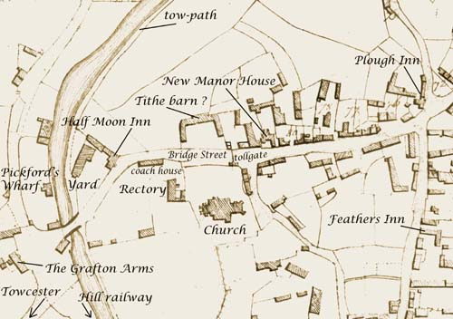 Some changes in the western end of the village had been made before the coming of the canal. A barn believed to be a tithe barn, facing the parish church, was built on the old site. The barn was well set back from the street and had a somewhat ostentatious layout with two wings splayed symmetrically. By about 1830, another map shows that it was partly demolished lending support to the idea it was for tithe. This is because there was a move to collect all tithes as money rather than as produce and from then on a barn would not be needed. The move was welcome by most rectors as managing money seemed so much easier! During the period when Blisworth was a terminus for freight, this barn might have been used as a warehouse. Its intricate rearmost elevation may have recalled the architecture of an old manor. The outline still exists today in the shape of garden boundaries behind numbers 52 and 54 High Street and behind the 2004 ultra modern-style stone house. The figure indicates the location of a new manor and today the site, with an even newer house, is indeed called Manor House. As explained in Chapter 3, neither the site of the tithe barn nor the site of the current Manor House can be seriously regarded as the original seat of the Wake family.
In 1797 John Linnett, a boat owner, built, or perhaps extended, the Half Moon Inn with its yard and outhouses. It provided accommodation for mainly canal workers and boatmen with their families certainly beyond 1871 as we can tell from the censuses. Its name in subsequent times varied; 1849 - ‘Sun and Moon’, 1874 - ‘Sun, Moon and Seven Stars’ and 1900 - ‘Sun, Moon and Stars’. The adoption of the more elaborate names is probably because, since 1842, the inn was a lodge for the Manchester Oddfellows Society. The logo of that society included a sun, a moon and seven stars. Although built mainly in brick its right-hand wall is of stone - part of a building of which we have no knowledge. The large yard attracted publicans at the inn who had other businesses such as Fred Chester’s butchering work and John Capell’s threshing operations. The building has been neglected for 20 years and a compulsory purchase order has enabled the planning of a project to restore the building to its former glory. The Grafton Arms Inn was built in 1795 to serve as a coaching stop. The road was made a turnpike in 1797 and a tiny tollgate house was set up at the front of the graveyard on the main street to be replaced by a larger one established near the railway arch.
Boatmen would work at the wharf loading and unloading the barges. A skilled band of them was employed as ‘leggers’ to propel the barges through the tunnel. Barges were just under 7 feet wide and the tunnel width was 14 ft 6 in - room enough for barges to pass one another. Wooden platforms were attached to the sides so that a pair of men could push by walking against the side of the tunnel. The planks had to be stowed before boats could pass each other. With the arrival of some boats equipped with steam engine propulsion there was soon to be a serious accident. In 1861 a steamer was towing a freighter by a long rope proceeding south to Stoke Bruerne. A boat being legged was proceeding north. They stowed the planks and passed each other successfully but the freighter had crossed to their side of the tunnel. The collision and mix up resulted in two men being lost, overcome by fumes from the steamer. There is of course a ghost story telling of “choked cries . . .” which probably dates from that incident. From then on three more vent shafts were dug for extra ventilation. A group of barges were hauled through the tunnel by a steam tug (see image 08-09) in one direction at a time instead of using leggers. The image was taken around 1920 and shows barges waiting at the tunnel mouth for the tug to appear from Stoke Bruerne. Note, from that image, that one individual was enjoying the canal as a place of leisure. There was a small group of people; Mr T W Millner the canal engineer, James Knott the village doctor and Mr Thresham, a hotel owner, who all had sailing boats on the canal for a while.
As is evident in the above figure, Bridge Street (now known as High Street) had a pronounced bend at the Half Moon Inn which suggests that in early times it merely continued straight down to a ford at Wash Brook. The continuation may have aligned with Dingley Lane or with the ‘Look out’ path mentioned in Chapter 2. If the present level of the road to Gayton is a guide then the ford would have been on the lookout line - but we will never know! When a bridge was built, probably by the Romans, a place for it well away from the ford would have been found so that the ford could still be used, for example for animals.
It was in 1811 that a Blisworth bypass was first proposed. The point made earlier was raised, presumably, about the Northampton road; why not run it directly to the bridge and have the lower section of Bridge Street perfectly aligned with it? This would have reduced traffic through the village centre which would be better for the travellers but not for the tradesmen. On a later map (c. 1830 enclosure awards map) the sharpness of the bend seems to have been made worse compared to the situation in 1800. It is evident the coach house for the rectory had been enlarged and lengthened - so perhaps the rector was keen for the bypass! However, that bypass was never built and it was not until 1963 that the coach house was finally demolished. A bypass was eventually built around the village in 1991.
In the early 19th century the village was having economic difficulties. The Duke of Grafton made distributions to the poor in 1811 and again in 1828. Perhaps partly to help the local economy, the Duke in 1820 sent his agent with an adviser to Blisworth to find a viable limestone quarry. The canal would be an ideal means of dispatching the stone. They recommended an area to the east of the tunnel mouth where some old lime kilns were sited and set about constructing a wagon railway down to the side of the canal, on the west side, not far from the tunnel mouth (close to the western end of a later installed bridge for ironstone). The story should be revised slightly - it was in 1820 that the Duke initiated a Grafton limestone business but there was limestone extraction occurring well before that time. Very similar components and wagons were used as that for the hill railway (perhaps components were returned from their temporary use in the link to Northampton). The wagons were really boxes on two axles with a side panel that could be knocked out so the stone would run down a chute into waiting barges. The wagons were returned to the quarry using a couple of horses but were run down to the canal by gravity. A man called a ‘spragger’ rode the wagons, ready to jam a wheel with a stick to control the descent - quite a skilled and important job, the sort that inspires and motivates one to do well!
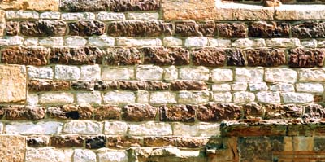 Across the country from Lyme Regis, through the Cotswolds to Whitby there are substantial strata of limestone that outcrop in many places. In Northamptonshire the material is extremely variable, for example; near Harpole the stone was of high quality for masonry work, at Blisworth the stone included some good building stone and, from further north between Corby and Stamford, near Collyweston, the stone was used for roofing because it would readily cleave into thin slabs - hence “Collyweston-style” roofing. All are classed “Blisworth Limestone” in the geological sense, at least for Northamptonshire. There are a number of old limestone barrow-quarries around the village. On Gayton Hill crop marks have revealed circular pits thought to be from the Iron Age. There are also fields named ‘Lime Kiln’ or ‘Mortar Pit’ and ‘Slate Pit’ or ‘Slat Pitt’ and this last name implies a readily cleaved stone or one that requires the patient practice of leaving blocks of limestone, called logs, to be frosted for a few years whereupon the right sort of log would fall into slates! Stone can only be worked by the skilled and Collyweston slates were made in a factory and shipped to the user. A catalogue of the day listed 28 different sizes which enabled that characteristic ‘graded’ appearance on a roof. Samples from the 28 names used include whippets, even longuns, large mumfuts and bachelors!
A substantial old quarry on glebe land, near Rectory Farm, provided the stone for the 15th century changes to Blisworth church and it can be safely assumed that most of Blisworth’s old buildings used local limestone. However, in many of the buildings in Blisworth, limestone is of poor quality and was layered with the much stronger ironstone. The resulting patterned stonework is a feature of Blisworth - see above. The Duke of Grafton built a house on the Stoke Road called the ‘Blisworth Stone Works’ near to where the stone tramway crossed the road. It stands today, a little weathered, as a farmhouse. The Duke also built the ‘Grafton Villas’ in about 1836 next to the arch in preparation for the coming railway. At first a stationmaster used one of the two houses but the Duke’s chief intention was that the villas would serve as an advert for his stone for anyone arriving by train, or passing by coach on the turnpike. In later years, from c. 1860, the village doctor would live there and the area would become known as ‘Doctor’s Corner’.
At first, much building stone was dispatched from Blisworth and the quarry provided welcome employment. In later years and up to about 1912 the stone was mainly sent to the Hunsbury Iron Works to be used as a flux in the blast furnaces. In 1920 the works at Hunsbury closed and the land around the quarry was sold by the Duke as farmland.
It is doubtful that any local stone was used to build two of Blisworth’s notable buildings - the rectory rebuilt in 1841 and Blisworth House rebuilt or extended from the 16th century Hall in 1702 and c. 1825. Possibly substantial changes were made at the earlier date which is recorded in a date-stone “P W E 1702” that commemorates a William Plowman, an eminent tenant farmer who quitted in 1779. The changes at the later date, probably before the start of Squire Stone’s tenure, entailed converting the roof by lessening its pitch so that a series of dormer windows would join in presenting a classic three-storey facade. In addition, the floor area was doubled at the rear. A matching second roof was built and a roof-valley joined the two sections. Although the building was part of the estate, it is not clear whether the Duke of Grafton alone paid for the extensive improvements on either occasion.
Blisworth would be still adjusting to the changes brought with the canal when a new mode of travel, the railways, arrived on the scene. Railways were not challenging the role of the canals in moving a steady flow of freight around the country. Instead, their attraction stemmed from people finding it irksome to travel in a dusty or muddy, and distinctly bumpy, coach over the roads of the day. The London and Birmingham Railway Company was formed in 1831 and Richard Creed and George Stephenson quickly began to project a railway through the Midlands. At first many provincial towns did not particularly want the railway; Buckingham for example where steam engines were regarded as smelly and smoky. Stephenson was famous by then with his success in 1829 with ‘The Rocket’. His vision was “to provide a halt at every crossroads and a first class station at every town”. One possible route was through Buckingham and Brackley and the other through Roade and Northampton - without much regard then for the obstacle that Hunsbury Hill might present. The Roade route was favoured because of Buckingham’s attitude but to get over the uplands Stephenson had the same general problem as that faced by Barnes. His plan was to cut through rather than dig a tunnel - a task which proved surprisingly arduous as the rocks that were encountered were much harder than expected, needing blasting using manually compacted gun-powder to get through. Steam engines were used to drag the excavated material out of the cutting which is up to 50 feet deep and two miles long.
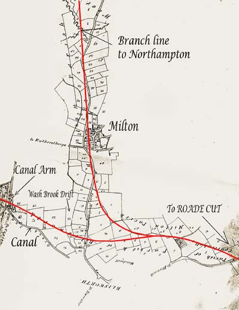 The inclusion of Northampton on the main line was dropped for two reasons; the railway north of the town would be too close to Althorp Park and the levels required were far too difficult for the early feeble steam engines even if a path around Hunsbury Hill were taken. A branch line rather than a main line station was therefore planned at the outset for Northampton, much to their chagrin, but it was apparently deferred for a few years anyway. A portion of an early Stephenson planning map, reproduced here, shows an interesting route. The map has been scaled down and inverted so that north is where expected and the rail lines are highlighted in red. He planned a level crossing over the Northampton road. There was the intention to provide a station at Blisworth Arm and pass through the vale more northerly and at a lower level than the chosen final route. He also offered a station at Milton - in the very centre of the village. Rather than provide useful crossings with roads there seemed to be almost a perverse intention to obliterate some of the Northampton Road with the branch line. In the end, this plan was too difficult for two reasons. The curves were too sharp and it became vital that the levels of the railway were more constant. It is a tribute to his final route with its careful grading done 170 years ago that the main line can now be used at speeds in excess of 100 mph.
The grading issue meant that a very high arch would be needed over the Northampton road. A local builder, Richard Dunkley, was commissioned for reason that his design was the more robust of the two submitted. As mentioned above, the branch line was deferred. The completion of the main line was delayed and Northampton took the opportunity to step up its lobbying for a station. The delays were due to difficulties with the Kilsby tunnel to the north and coaches through Towcester were being used to link the halves that were still un-joined. The choices for a Northampton station would have to be between Weedon, Blisworth or Roade. The Duke of Grafton, indicating the importance of the turnpike, made sure that Blisworth was chosen and, late in the day, a crude halt was provided immediately to the east of the arch having a long wooden stairs to a hut by the roadside.
The year was 1837 and the line was open. Almost overnight both the long-haul and the linking coach traffic through Towcester ceased and a commentary from the 1850’s states: “ … the town was once a town of inns yet now the lofty gateways lead to tumble-down workshops or small tenements for only the poor … they were once spacious yards for the reception of merchandise with warehouses, stabling and dormitories…”
The importance of a coach stop at the arch was paramount to Northampton. However, after only a few years a new station was established on level ground to the west. The farm lane known as Ford Lane was extended to the station, renamed Station Road, and a new bridge was built over the canal. It must have seemed to villagers that the unwelcome work force would never depart. A station house and hotel were built at the new station by Dunkley and finally, in 1847, a branch line was run out to Northampton (Far Cotton) making the station ‘first class’. This reference to first class means that all trains would stop there. Later this branch was extended to Peterborough. Northampton people had a rail connection at last but passengers would have to change at Blisworth for a service to either London or Birmingham. A loop through Northampton (Castle Sta.) was eventually added around 1870.
Station Road was initially a gated private roadway just to the station. There were gates too on the Northampton road because the turnpike tollgate in Blisworth had been moved there. Etchings and drawings of the railway arch with and without tollhouse and gates have since become icons.
The process of building the railway was almost as bad for the village as it had been during the canal tunnel years. The gangs of itinerant workers were more of a curse than an economic blessing. An anonymous letter to the Northampton Mercury reported, “… as they now gradually withdraw from the works, leave bills unpaid in all the villages where they could obtain credit with trades people or those who let lodgings; the losses sustained are in many areas severe. And not only does the district suffer in a pecuniary way from the visits of these freebooters, but fellows have taken many women from the neighbourhood, and in some instances the wives of decent men and mothers of families, who have been induced to rob their husbands and abscond …” Blisworth could hopefully settle down for a while - only for ten years however.
In the short term the village suffered some loss of farmland and an increase in traffic using the turnpike. The railway eventually had an extremely beneficial effect on Blisworth - it brought accessibility and hundreds of happy people. The effect this had on the village is covered in the Chapter 5. Near to the hotel there developed a goods and stock handling area. Cows were frequently herded together ready to be walked to a local farm or even to Northampton market before lorry transportation was available. There is a nice story from a Mr Griffiths, stock dealer, who used to live near the station. “With the cows in an agitated state after their journey it was no help to find that the fine Grey Amazon parrot at the hotel would mimic the shouts and whistles men were making to control their dogs - the poor dogs could not tell man from bird!”
It has been said that ironstone was first discovered when the tunnel was being constructed but there was insufficient demand to be bothered with it at that time. However, the first recorded discovery dates from 1840. The showing of ore from this area at the Great Exhibition of 1851 was the catalyst for exploitation as mentioned in a recently completed overview of Blisworth mining. The discovery came as a surprise since in the early 1700’s John Morton had reported to the government of the day there was no iron ore in Northamptonshire. This is an oversight which has been reported many times and it is odd that his travels left out Blisworth - indeed they seem to have left out most of the shire. In Blisworth he would have seen ironstone in extensive use in house building. The hardest of the ironstones were put into foundation wall-plates and those of intermediate hardness, which could be more easily sawn or split, were used as a rough stone.
Many of Blisworth’s oldest surviving 17th century houses are characterised by a banding in the courses where ironstone and limestone are used alternately and it became a local building fashion. Some say that use of banding is simply because both stones were available but it certainly makes sense for a builder to correct or workaround any unevenness in the courses of rough ironstone by using a more amenable layer of softer limestone. On the other hand, a formal banding with sandstone and limestone, purely for decoration, is evident in the body of the church’s 14th century tower. Ironstone displays an extremely good resistance to weathering and in combination with some of the local and rather soft limestone, an economical compromise was made with what was near at hand. There were therefore three benefits in using banding - working to even courses, for decorative effect and achieving weather-resistance with economy.
The weather-resistance of sandstone is enhanced by the incorporation of quite small amounts of iron (ferruginous sandstone - ie. ironstone but not of ore grade). The remarkable corner ‘buttresses’ of the church tower show two inches of weathering after over 600 years in the plain sandstone but a negligible loss from the ferruginous blocks. The structure is a fine one, unparalleled anywhere in the village, with mortar courses less than quarter of an inch between the large sawn blocks. Perhaps one can imagine the incredulity with which our village builders watched the visiting Master masons and subsequently their worry that their own efforts might never see them in Heaven!
Eventually the ironstone entrepreneurs arrived and began in Blisworth in 1852. They extracted by hand the ironstone from a field adjacent to West Bridge Hill leaving a broad hollow which is still plain today. The ore was trundled down to the canal and shipped to Birmingham. News returned to the effect that much of it was too sandy and a better selection was needed. In the 1850’s and 60’s open cast mines were started in two or three places near Blisworth and similarly around Gayton, near Duston and at Showsley. Eric Tonks’ excellent book entitled The Ironstone Quarries of the Midlands, part III, provides much detail. As a local source of employment, the mining was welcome to those who were tough enough. Men from all the neighbouring villages walked each day to work at Gayton or Blisworth, some from as far as Alderton.
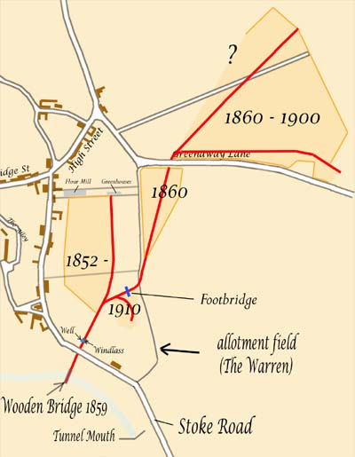 Unfortunately, the mining came right into the village ruining much land adjacent to South Street (Stoke Road). The Duke of Grafton had set out an allotment field for the villagers c. 1830, perhaps to offset loss of plots south of the Green or because of the field enclosures, but over half of the allotments were spoilt by these works. The land associated with Home Farm in South Street was also ruined as far north as the flour mill. Much was rendered fit only for rough pasture. The last phase around 1910 left a ‘gulley’ in the allotment field with a few wagons and trestles. When the furnaces were shut down at Hunsbury in 1920 the contractors just lost interest. The wagons made fine toys for boys growing up in the post war period. Mining rights left the land in the ownership of the iron or steel companies which, through the years of the depression and WWII, showed no inclination to tidy up. The fact that the land near the village was held for mining had quite an effect on the village from 1930 onwards - as explain in Chapter 6. The gulley in the allotment field is known locally as ‘The Tip’. Recently, an axle and set of wheels from an old wagon was rescued from under heaps of rotting refuse discarded from working the allotments each year. The gulley and its extension towards the canal runs quite close to the rear of houses in Greenside, a small cul-de-sac development finished in the early 1960’s, and some sections of it have been turned into pleasant gardens.
The sequence of the works in the village, as far as is known, is indicated in the map in which the various positions of wagon-tracks are shown in red. The extent of some of the areas is forgotten as the seams of ironstone were variable in thickness. The miners ‘wandered’ where conditions were best and within a few weeks, the exact outline of their work was lost. Mining began in 1852 by the pioneering contractor, John Hickman. He started shipping the ore by road and frequently lobbied for a railway link to the main line, to no avail. He gave up in 1859 and the rights were transferred to G. E. Bevan & Co. Ltd. who built a wooden bridge over the canal and set up a tramway, passing under the road, down to the bridge. Ironstone wagons were let down the 15º incline by steel rope wound over a drum windlass. The lowering of full wagons served to raise the empty ones in an arrangement invented by the Bevan company. The rail track extended to the far side of the bridge and the wagons, similar to others, were adapted with opening ends and could be tilted towards a chute over the boats. The ore fell through a gap in the floor of the bridge. Perhaps unsurprisingly, the bridge was left to rot into the 1930’s with an empty wagon ominously suspended over passing canal traffic! In fairness to the workers, having left a wagon on a Friday, they were laid off with no warning at the end of the shift because of the closure of the furnaces at Hunsbury which had been established c. 1880.
As is clear in the map above, the 1860 track crossed over Back Lane as it left the field known as the Warren. Back Lane was probably only a path by then and it was switched a little way to the west so as to easily bridge over the track in the corner of the allotments. The switch remained after the mining had finished so that the adopted path joins the Stoke Road through the allotments gate to the south instead of running around the outside of the field. Shortly after 1949 certain paths were given legal status as bridleways and this is why we have horses in our allotments!
In the 1940’s, as a reaction to the war, the contractors returned with more modern plant to work some areas they had surveyed earlier on Gayton Hill. An enormous dragline bucket was used in conjunction with a light railway. The activity was very disruptive to farmers and was an eyesore to villagers as it approached closer and closer to the village - the bucket would scrape and screech to remind one of its presence. The only remaining evidence of this work is in the form of fields with unnatural undulations and sometimes a 3 metres drop in level from an adjacent road. The mining process was a bit more carefully regulated and overburden and topsoil were sometimes put back in the right order so that farmers could achieve reasonable productivity within a few years. The workings on Gayton Hill continued from 1942 to 1967. Although the steel company still owns much of the land it is unlikely they will start a third phase . . .
There is something about ironstone mining that compels one to keep collecting photographs. There were ingenious contraptions for loading from wagons into barges and into railway trucks, loading from light railway trucks and even from road trailers into main line trucks. Each site had its unique arrangement that must have fired the imagination of the boys with Meccano at the time. If space allowed there would be coverage here for all of them! But as far as issues that directly affected Blisworth enough has been said.
5. The Recovery
The previous chapter has been concerned with the impact of waves of industrialisation in and around the village. By about 1860, there was full employment and it would stay that way until the 20th century depression. The employment meant an expansion in population that placed enormous stresses on the capacity of the housing. Blisworth had already experienced a severe housing crisis due to a catastrophic fire in 1798 which broke out in Bridge Street from ashes thrown into a yard onto dry grass. The number of buildings lost was twelve as the fire swept up Bridge Street towards Northampton and also along South Street (Stoke Road) destroying there the miller’s house and the Wake Endowment School. Possibly as many as eight home businesses were destroyed. In those days there was no insurance (and incidentally no fire service) and it was common for the clergy in neighbouring villages to afterwards declare an emergency charity. Both the Duke of Grafton and the church would have helped as much as possible so that houses could be rebuilt while the homeless were hopefully taken in by neighbours.
The population of Blisworth was erratic in the 19th century. It stood at 880 in 1841, 930 in 1851, 1000 in 1871, 1060 in 1881, 820 in 1911, 750 in 1951, 1190 in 1961, 2060 in 1971 and 1850 in 1991. The very modest rise after 1841, despite the start of ironstone quarrying, was presumbly due to the fact that people were moving to new jobs along with the new housing that was being created in Northampton to cope with the expansion in the boot and shoe industry. Blisworth’s population rose steadily in the second half of the 19th century and it was common for families to take in lodgers. One story tells of an old man in a ‘one up one down’ accommodating a family of seven - he would sleep downstairs with the husband and young boys while the wife and daughters slept upstairs. It was during periods like this that Blisworth was fortunate in its supply of good drinking water. There was only a handful of deaths in Blisworth over a five year period due to the combined effects of cholera and typhoid whereas in the ‘south quarter’ of Northampton (St James?) 43 died in one year out of about 800 - a similar number to Blisworth’s population. The problem for south Northampton was that no water well was very far from the River Nene and so all water was badly polluted. Maybe this advantage to Blisworth was played out countless times over the centuries. There was a major drop in population between 1881 and 1911 that can be accounted for in terms of a winding down of both ironstone and limestone quarrying.
Blisworth slowly recovered and it did so through improving economics. It spread out from a predominantly farming based community through the 18th century; trades such as milling expanded because of the canal and some entirely new trades for Blisworth sprang up from road and railway access. Meanwhile, farming would become more productive with the availability of the first machines and would require less labour. Home-based services would benefit from the robust economy. The village became less crowded as the Westley family and the Duke of Grafton built new houses.
--------------------------------------------------------------
Farmers (7), Butchers (4), Grocers (3), Ironstone managers (3)
Reverends (2 of course!), Builders, Carpenters, Blacksmiths, Shoemakers, Inn keepers, Coal merchants,
General Shop keepers (all 2),
Miller, Baker, Surveyor, Hardware dealer, Rag dealer, Doctor, Tailor, Carriage owner, Quarry manager,
Postmaster, Canal manager, Boat Proprietor and Watchmaker (all 1)
---------------------------------------------------------------------------
The 1874 Whellan directory reports a long list of ‘professionals’, as indicated above, working in the village and it is clear that one would seldom need to go to Northampton even though the railways would be offering ‘cheap day returns’ by then. Blisworth must have been a little town of shops. A regular bus to Northampton did not begin until around 1915 when Mr Nightingale introduced a covered bus service between Towcester and Northampton.
The 19th century censuses reveal that people were beginning to move across the country; most inhabitants were born in Blisworth or within the distance of two villages. The exceptions were most of the trades people and shop keepers and a majority of railway workers, lodged at the railway cottages, who originated from as far as two or three counties away. For employment and business opportunities the horizons were expanding rapidly. In the 1930’s quite a few shops remained, about half of them, and some are indicated in the photographs at the end.
After a brief account of the development of the village schools and the changes to farming, the dominant ‘trade’ before 1800, there is an account of a small selection of trades and families, including the vital subject of leisure, which are presented as historical sketches.
The education of children was under the church from the earliest times. Blisworth was fortunate in that Roger Wake provided an endowment in 1504 for a school in Blisworth, a free school, which by reason of its funding of £11 per year must have been very significant - a Grammar School. A remit of the free school was to regularly give thanks to God with pupils taking part in services as choristers and offering responses in Latin. Elementary grammar and arithmetic were taught as well as Latin. Over the years, the funding remained at £11 per year and by 1700 had deflated too far to support a first class teacher and therefore lapsed into being once again run by the church and a churchman was headmaster; in 1850 it was the Reverend Barry. In the meantime, the Wake family, who were by then located at Courteenhall, established another Grammar School there in 1672 where classics were taught for the age range 10 to 17 years. This school remained open until 1936. It was prestigious and the sons of many trades people in Blisworth went there.
The original endowment school was probably located in South Street (Stoke Road) and the later village school was located next to the Westley bake house but was destroyed by Blisworth’s great fire in 1798. It was rebuilt by 1815, in no great hurry, and enlarged in 1861 to present the now familiar front elevation of our Village Hall. Immediately after the fire Joseph Westley rebuilt his home partly on some school land that he had purchased so that, when the school was rebuilt in 1815, it was set against the Westley house with a negligible gap. The enlarged school was soon filled owing to the expansion of the village population and the church built another school for the infants in 1874 on the opposite side of Stoke Road on land donated by the Duke of Grafton. What conditions were like in these schools can be imagined from Walter Alexander’s account in Chapter 6. He recalls, in effect, that teaching was not a profession in those days and standards varied enormously. Before 1911 Baptist children were segregated into their own school and the information in the previous table indicates the estimated division. By 1912, the pair of C. of E. schools (and presumably also the Baptist school) were judged by the newly formed county education authority to be far too crowded and inadequately staffed and a new school was built at the corner of Courteenhall Road and the High Street. This new school and its teaching staff were overseen by managers. The old school building was let, for a while, as a private dwelling but later was used at times for meetings and on Sundays it was used for a church Sunday school. The old infants school became the Men’s Institute early in the 20th century and was eventually sold in 1960 to become a private house.
Information on pupil numbers in the log books is highly detailed but can be summarised in these terms; from 1900 to 1920 - 100 children, 1920 to 1950 - 130 children (except during the evacuation when numbers briefly peaked to 155) including children of all ages. The school building managed to survive the 1960's baby boom without much extension, because secondary schools would take the children of over 11 years. Before 1900 the log for the number of Baptist children, who were taught separately, is not available. From 1958, the school was given the narrower brief of a County Primary School in a reorganisation throughout the County. At the age of 11 children would then go to Roade School or Sponne School in Towcester according to the result of the 11+ examination. From 1967 onwards the 11+ system was abolished and, with not much flexibility in the rules, children would continue education at the newly opened Bugbrooke Comprehensive School.
As the Eastfield housing in Blisworth was being planned, Len Piggott (the headmaster at the primary school) lobbied energetically for the primary school to have a small patch of land as a playing field rather than see it go under another 6 houses. He was successful in that the owner, Mr T W Thorpe, was happy to sell the patch to the school and a charitable villager saw to it that it was levelled. To accommodate children born to new families in the village three new classrooms, an assembly hall and offices for the headmaster and secretary were progressively added to the school by 1967. The village has been fortunate in having a sequence of two exceptional headmasters, in recent times, in charge of the school, namely Len Piggott and John Basham. They, along with all the teachers who have been a part of their teams, have been successful in a challenging job in an increasingly difficult climate. From 1908 to 1958 there were three quite impressive headmasters, Mr. Green until 1928 when he retired with ill health, Mr. Bailey for 8 years and then Mr. Cole who was 'the right man for the times' in bringing a wealth of new ideas to the school. Mr. Cole was awarded the MBE for services to education in 1957. The school has still a reputation that is second to none in the County and this author remembers well the frequent plays, school outings and the ‘animal corner’ with lambs, ducks and chickens as inmates, enjoyed by the children.
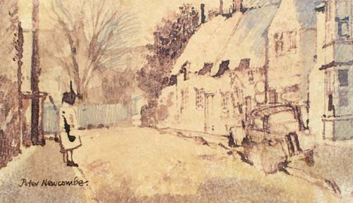 All the children will remember Mrs Charras, the lollipop lady, who very rarely failed to be there in the High Street every weekday morning and afternoon from 1964 to 2001. Peter Newcombe, the now famous artist who was born in Blisworth and has captured so much of Blisworth’s rural beauty, casually painted a picture of Mrs Charras while on duty unbeknown to her and sold it in his first exhibition to George Freeston who then subsequently gave it to his brother Ron. In the meantime Ron had died, so when Mrs Charras (Margaret) was to be thanked by the school and village for her services, George then presented the picture to her.
The dominant trade in the village, as explained earlier, was farming until around 1800. All the farmers and the labourers would be living in the village. There was a transition in the mid 1800’s as the Duke of Grafton built a number of farmhouses outside the village, relocated his most favoured tenants and persuaded others who were ‘wasting’ the land to find some other job. There were plenty of other jobs by the 1850’s including work associated with the canal, the railway and quarrying - with another branch of quarrying just beginning. Perhaps this transition was actually driven by farmers who wished to earn more in an alternative job. Whichever way around, the transition occurred but probably did so relatively slowly. The land to the north, which was common land, had no farmhouse and by the time of the estate sale in 1919 it was sold in many small parcels. Elsewhere, there were a number of farms of around 100 to 200 acres created such as Hill Farm (on Gayton Hill), Glebe Farm (south side of Towcester Rd), Tunnel Hill Farm (near Stoke Rd and Knock Lane), Blisworth Hill Farm (further out on the Stoke Road) and Lodge Farm (near the village on the Courteenhall Road). These five are roughly half a mile from the village centre and the workforce needed would have walked from the village - there are no cottages tied to farms in the parish. The Rectory Farm on glebe land (north side of Towcester Road) was only 20 to 30 acres but included stone quarries as a source of income. The land associated with the Blisworth Stone Works would also have been farmed. Embedded in the village were five more farms. The largest was Home Farm with perhaps 100 acres. The others (of 20 to 50 acres each) were The Manor with the Pond Bank fields and a butcher’s shop, The Hall (ie. Blisworth House) with the Park and a few other holdings, Cliff Hill farm on the Northampton Road and a farm (name unknown) adjacent to The Grafton Arms extending to both sides of the Towcester Road. There is also another small farm, Buttermilk Hall, located so far south that it surely must have once been part of Stoke Bruerne and Shutlanger parish.
The promotion of a few farms was mainly a geographic transition in farming that would increase income for the Grafton Estate because the land would be used more efficiently. The same farming activities continued. Arable cultivation provided corn for sale. It also provided corn, turnips or mangels to be fed to stock. Grassland supported dairy cattle and sheep yielding meat and milk for sale.
In 1841, the only census of this era to offer the detailed information, there were 77 agricultural labourers and 46 general labourers in the village out of a total population of 880. This implies that the big farms employed roughly thirteen agricultural workers - but not necessarily full time. The reason that so many were needed is that mechanisation was only just being introduced in the form of horse-drawn implements, with mechanisms that were wheel-driven, such as the plough, seed drills, cutters and reapers.
The arable fields were divided according to type or condition of the soils to make it easier to treat them individually. The grassland fields were a mix of sizes according to their use; for example, small paddocks were used to pen horses or isolate the bulls and tupps from the rest. Hedges were occasionally cut back for firewood or fencing stakes. At times they would be re-laid in order to enclose animals more securely by creating a ‘living hurdle’. The odd elm, ash or oak was left to grow to a full size in a hedge, by the gate or even in the middle of the field so that animals could benefit from shelter and shade. It is an over-statement to say the countryside was entirely manmade but it certainly was heavily handcrafted - and frequently allowed to get out-of-hand.
Conditions on the farms remained the same until mechanisation. Steam traction engines were available from 1880 and were used by threshing contractors working from farm to farm. Much of the ground around Blisworth is insufficiently level to plough by traction engines and the horse remained dominant until the 1940’s. However in other parts of England, for example Shropshire, Staffordshire and Lincolnshire traction engine ploughing and use of the horse for carting began to be challenged by tractors in the 1920’s. Tractors running on paraffin were first introduced there in around 1915 and were the object of considerable mirth if they became bogged down; this could be frequent since the design was inadequate. In effect, farmers elsewhere were the guinea pigs for tractors that finally made an appearance on Blisworth farms in the WWII years.
In 1914 throughout the country, many horses were appropriated for the war so that by the end of the war the farms were in a dreadful state and many farmers had sought an alternative living. For a while, German prisoners of war, held at a camp near Eastcote, were employed on farms and adapted well to the conditions. The subsequent slump of the late 20’s and 30’s brought farming virtually to a standstill - food was being imported from America and a farm could be bought for a negligible amount. However, WWII changed that dramatically when the government realised nothing short of radical measures would suffice. Importation of foods from America continued but, with improved German U-boats, there were severe losses at sea. The public was instructed to “dig for victory” and farmers were financially helped to build up production - particularly of cereals on arable land. Farm machines that had been developed in both America and in the British flat lands were rapidly deployed everywhere as the country coped under the strictures of rationing. These machines were initially operated by the rotation of their own wheels but soon there were tractors with a “power takeoff” which would operate the machine being towed whether it was moving or stationary. All those labour intensive operations such as sowing, hoeing or scuffling out weeds, spraying and spreading fertiliser, cutting or lifting root crops, cutting with threshing (ie. the combine harvester), baling and loading were mechanised by the 1950’s. Alongside the flow of innovation there was a continuous enlargement of machines for their greater throughput in order to achieve efficiency in terms of fuel and time used. The push for expansion, the “economy of scale” essentially, continued into the 1960’s and in fact still continues. In this climate it is hardly surprising that in the 1950’s and 1960’s fields were merged together so that their margins could be productive and the larger new machines more efficient. For some farmers, clearly those with a relatively small holding, it was not possible or at least far too risky to keep pace with the changes. As these people retired with little prospect for their offspring to continue, their farms were absorbed into a larger farm nearby. Around Blisworth now an arable farm might amount to over 1000 acres and require only two men to operate it.
Operating a milking herd was also mechanised as far as possible but the enhancement from mechanisation was not so significant compared to the case of arable farming and so, gradually, the small farms around Blisworth withdrew from milk production - though that withdrawal is not yet quite complete.
For Blisworth, the 1960’s brought a considerable increase in housing and because farmers had mostly relocated in the 19th century to units away from the village, it is fair to say that the village was not much affected by any subsequent developments in farming. The village was becoming almost too large for farming to be all that noticeable other than through the enjoyment of having yellow rape or blue linseed fields interspersed with the subtle green to yellow changes as corn ripens. But there were a few smaller farms that survived for a while in the village. Home Farm had been damaged by the stripping of topsoil in the Victorian quest for ironstone. As luck would have it, a Dane, Mr Erichsen, came to the village who knew all about pig production and successfully used the farm’s poor land from 1953. It was, of course, all built upon in the 1960’s and 1970’s along with Pond Bank and the remains of Manor Farm. The Rectory Farm and a few others continue as smallholdings.
Occasional clusters of unwanted buildings arose in the process of farm expansion by absorbing neighbours. These were ideal for development into an industrial or office park, for example Lodge Farm. In diversifying, some farms were turned towards the leisure industry such as the Blisworth Stone Works farm which became a “DIY Livery” yard for people who like the horse riding lifestyle.
Flour Milling As explained in chapter 3, we know that the watermill was active before 1650 because of Richard Symson’s will which was registered in Blisworth. Subsequently the Dent family milled at the watermill for four generations or more. William Dent died in 1704 to leave John who died in 1730. At the time of the canal construction the mill was still known as Dent’s Mill with Richard Dent in charge. There is also a reference to the mill from 1718 by William Taylor who was collecting material for Bridges’ History of Northamptonshire - “Blysworth Brook rises from dykes and small streams in fields there, drives an overshott mill, makes a small brook passing west of Middleton”.
The Grafton rent records of 1757 show that the miller was free of rent and perhaps this ‘freehold’ privilege extended to all millers whether they used water, wind or steam. If this is correct then the story of milling in Blisworth fits together quite well. There is evidence for wind-milling being routine in Blisworth as early as 1730 - sixty years before the water mill was threatened with removal of its water - and that the Dent family operated the windmill. There was however an unexplained gap because the first mention of an actual windmill is that Anne Westley had freehold of the one on Cliff Hill in 1825.
We now know that water milling was already an attenuated activity around 1720 under the Dent family - well before being totally discontinued in 1796 due to the building of the canal. There is now seen to be a continuity of wind-milling, also under the Dent family, with Richard Dent in charge in 1815 according to Grafton records. However, in a 1839 Grafton survey, which appears to have been overlooked, an Ann Westley is shown in charge of the windmill and having freehold of the site on which the Westley Buildings were eventually built. In 1855 an Elizabeth Westley refers to her ‘tenement at the end of South Street’ in her will and leaves it to her second son Richard, having handed over the sizeable baking and milling businesses to her entrepreneurial first born, Joseph. By the way, in a will, ‘tenement’ simply meant a plot with fixed buildings. The will, together with the map and genealogy by Sally Edwards, proves that Ann and Elizabeth are the same woman - Elizabeth nee Campion. The survey and later censuses indicate that her 8 cottages, in 1839, had expanded to around 13 by 1841. From the 1851 census, it seems that 14 -16 units were established and Ann, aged 62, lived in one of them with her daughter Mary Ann, aged 21. They described themselves as annuitants. By the time of the 1861 census, all the buildings were probably finished, comprising about 28 units. They were referred to as ‘Westley’s Yard’ - extending over the site now occupied by our surgery and the white house next to it. The house now known as Victoria House, on the southern-most tip of Ann Westley’s land, may well have been a little mansion that Ann had built for herself before the final expansion. Another point is that the Westley buildings have been presumed to be for bake-house or mill workers but this is not indicated at all from trades that tenants disclosed to the census enumerators. Perhaps the houses were for the village generally.
To explain the Dent-Westley transition, it is proposed that Elizabeth Campion, who was 27 in 1815, was probably Richard Dent's assistant at the windmill while Samuel Westley, same age, was a baker under his aging father Joseph senior. The two were married in 1820. Samuel died in 1832, perhaps of lung disease, and Richard Dent at about the same time was incapacitated - presumably. This would leave Elizabeth, known of course as Ann, to take over the windmill and pave the way for her son, Joseph junior, to become both miller and baker. In 1841 Richard Dent was clearly not in too bad a health, at the age of 70, for he described himself as a labourer to the census enumerator. He lived next door to the late Samuel Westley's bakehouse - perhaps his experience of flour earned him work there.
The alternative interpretation is that Samuel Westley was the assistant to or replacement for Richard Dent. This raises the question who was then in charge of the bakery. Since he died in 1832 and his widow was the acknowledged miller by 1838 (some say 1825), how would she have received sufficient training? In any case, it seems she was amazing - achieving much in a village almost totally owned by the Duke in an age when women were not expected to be so influential.
In more general terms about the Westley family - parish records show that in about 1780 Joseph and Mary Westley arrived in Blisworth. With them were the elderly Shadrach, a prosperous farmer, and Thomas who both died in c. 1800. Joseph and Mary Westley had two children called Samuel and Mary in the late 1780’s and it appears that the mother died at about this time. It is clear that Samuel rose quickly to be Blisworth’s baker. The arrival time of the Westleys is the same as that of the Goodridges, the Baptist leaders. In 1787 a Robert Campion farming at Blisworth agreed to the Baptists using a barn as a meeting place and in 1825 a plot of land was purchased for a meeting house. Elizabeth Campion was Robert Campion's daughter.
The Westleys owned two houses, one at the south end of South Street very near the corner of The Green and another near to a bake-house (see image 11-03) which they had established in South Street (Stoke Road) with a homestead that ran back to Back Lane. The great fire of 1798 destroyed the endowment school building and their house near the bake house. Immediately afterwards Joseph (snr.) Westley, with some alacrity, bought a strip of land from the school trustees and rebuilt a narrow house in 1799 between the bake-house, which was not damaged by the fire, and the remaining school land.
It was Samuel Westley’s son, Joseph, who eventually took over the milling business from his mother. The business at the bake-house continued for years based on the output from the windmill. However, Joseph was very keen on new methods so that, by 1871, he had built a steam-milling factory behind the bake-house with a substantial chimneystack and then had no further use for the windmill. In 1877 he travelled to Austria and Hungary with 40 others (members of an association of millers) to learn of advances in technology, viz. the new steam powered roller-milling machines. Only two years later, and 90 years since the great fire, there was a second fire but confined to the mill thanks to the wet weather and a thick canopy of snow on the buildings. The granary and stables were lost and there was damage such as cracked castings to many of the machines. With no less alacrity than his grandfather he resolved to build a new mill based on roller-milling. Anne Westley’s freeholding of the windmill was exchanged for a plot of land on the canal wharf - this being presumably at the Duke of Grafton’s discretion in continuing to charge no rent from millers, that is, no money changed hands in the acquisition of the wharf area. Presumably, the windmill was brought back into service while the new roller-mill was being built.
After the move, the Westleys continued with the bake-house in production until 1895 when it was transferred to Thomas Sturgess. Everyone who has visited Blisworth will have noticed the mill by the canal. Few people realise that the shell at least was built, in 1879, in less than a year. The new mill was quickly brought into full production, probably by 1882, of about 1000 sacks of flour a week and it provided employment for 45 people for many years.
By the time Joseph Westley died in 1894 he had moved into Grafton House presumably to be near his work! Grafton House was once The Grafton Arms Inn just by West Bridge. After his death his sons took over and with a partner, a Mr Clark from Blisworth, branched out in 1895 to establish an even larger factory at Nunn Mills in Northampton. They kept the Blisworth mill running until about 1920, when the Grafton estate was being broken up, but then bowed out so that the going concern and the land could be sold to the Northampton Cooperative Wholesale Society - a more successful reincarnation of the 19th century “Progressionists”. Two of Joseph Westley’s sons lived in Blisworth, Alfred and family at Crieff House and John at Grafton House.
From about 1841 onwards Anne Westley built over 24 dwellings, complete with a grocer’s shop, in two tenements on plots adjacent to her house. In the 20th century they acquired the uncomplimentary name “The Barracks” owing to their austerity. Later, Joseph Westley built a row of houses called Pynus Cottages towards Towcester (see "Pyesnest" field) and put up the money for the 14 or so railway houses near the railway arch. He was happy to see the village benefit from his good fortune and provided houses that were not exclusively for his employees. He became a JP, a long serving member of the county council and a churchwarden at Blisworth - indeed he helped a struggling church and in so doing managed to cement Church and Chapel! His brother Robert farmed in Milton and Rothersthorpe and was influential in the Baptists’ cause in those villages.
Finally, it is worth mentioning that Joseph Westley was a typical entrepreneur in coming up with ideas for satellite businesses. He established a chandler’s shop at the canal and, earlier, while running the original steam mill in the Stoke Road, he used waste steam from the operation to heat a set of long glasshouses and added ‘nurseryman’ to his list of services, renaming the company “Blisworth Mill, Bakery and Nurseries Co. Ltd”. Alfred Alexander from Stoke Poges was manager of the glasshouses and grew vegetables that he sold in his High Street green-grocer shop. His son Walter Alexander whose story is briefly told in Chapter 6 was the village amateur photographer and he greatly enriched the heritage of the village with his photographs some of which are included also in the George Freeston Collection. Some of his photographs are reproduced on the website with the kind permission of his daughters.
The Northampton CWS, being the new owners of the mill from 1920, bought farms in an effort to consolidate a business. However, they made substantial losses and by 1930 were forced to close the business and sell up before the entire society was put at risk. A reason given by the directors was that only large mills placed on the coast could compete in the conditions that prevailed. The sudden loss of about 30 jobs with no severance pay was a serious knock to the village. The Grand Union Canal Company then bought the mill, stripped out the machinery and took down the chimneystack in around 1935. They used it for storage for many years until letting it to a wine bottling company in the 1960’s and a herbs packer, The British Pepper and Spice Company, in the 1970’s. This operation gave Blisworth a distinctly herby smell as parsley, sage etc. were delivered by local farmers and dried on heated belts and packed for wholesale supply. Of course, being a mill there had to be a fire eventually! But it was fairly trivial - the parsley belts caught fire one day in 1979 and filled the mill with the oddest smelling smoke which, along with the fire-bell, quickly flushed out all staff to their safety!
During WWII the mill was used to store hundreds of tons of canned food - a ‘buffer store’. As the merchant ships were plying the Atlantic and docking in Liverpool or Glasgow the contents were dispersed by road and canal to various sites. The paper work is generally headed up with a title such as “S S Empire Lea - 560 packs of pilchards” for incoming batches and, in some cases, a wonderfully entitled subject for outgoing - “Salmon for London”. There were many letters exchanged about the fact that the number of packs received was at variance with the number sent. The “Salmon for London” correspondence rumbled on for weeks until someone admitted that the number of damaged packs had been grossly exaggerated and, indeed, there were some ‘inexplicable’ losses after all!
There is a story about the mill in the war years which George Freeston used to relate, “as a group of school boys from Tiffield were walking through Blisworth they leant over the bridge parapet and observed many packs of food through the windows. As the weather was particularly cold at the time they walked over the canal which would normally have ensured security and broke in. They filled their pockets with cans and made their way home. They overdid things because days later, when the thaw came, there was exposed, yard by yard from under the snow drifts, a bonus for the villagers in those rationed times - and then another and another . . . ”
The Mill, as it will always be known, was eventually sold to a developer who converted it into 21 luxury flats that became available in 2000, see rear cover. Blisworth is grateful for this because the alternative of demolition would have been unthinkable. Perhaps to some it seems to be a ugly building. There was the Victorian lady who rounded a corner to suddenly face the mill and in her account she decried the red brick but thanked the ivy and the elder that were obscuring part of the mill and recorded, “again, nature shows itself to be a better artist than man”. However, heritage is a proud mixture of the elegant and the less so and the distinctions are in the eyes of beholders!
Meat-processing After the Westleys sold their interests in Blisworth, the bake house in Stoke Road continued in production under Thomas Sturgess, and later his son William. Eventually however, the business was moved to the High Street, the bake house was demolished and the chimney pulled down. In 1924 a Mr C W King set up a meat-processing factory using the whole strip of land. The Westley house against the school was then used for an office and accommodation. The glasshouses were retained for the Alexanders’ use.
Mr King, from a local well-known firm of pork butchers, established the factory on what were modern lines at the time. The aim of the company was “to recapture in some measure the vast amount of bacon trade which is now going out of the country, and to furthermore provide the British consumer with a superior grade of goods at a competitive price” - as claimed in local newspapers. It comes as a surprise to learn that the firm used dry curing so that “in purchasing this bacon the consumer is not buying a quantity of liquid weight in the form of water absorbed into bacon cured by the wet method”. Perhaps we thought that the watery way of curing bacon, abhorred in Blisworth in the 1920’s, was a recent trick! Pigs were brought in at the back gate from the bridle way that was Back Lane. They were caught in a way that caused a minimum of distress (the technique is not explained) and conveyed into the factory. It is a credit to the management of the factory that interference with normal village life was not often made an issue but on a few occasions the local authorities were called to deal with the smells associated with the offal and so on.
The business expanded to the level of 300 pigs per week, concentrating on the large ‘whites’ and so encouraging local farmers to respond to the onslaught on the home market from Denmark and the Netherlands.
The factory used a boiler to generate steam needed to clean the carcasses and to operate a separating process aimed at collecting lard for sale. Because of the boiler, the factory sported a plain looking chimney that was probably less than half the height of Westley’s brick stack. There was also a section devoted to the packaging of the products near the front. Near the middle of the site were ovens for cooking meat and pork pies and machines for slicing sides into rashers. A point was made of the fact that progress from pig to produce was made in a more or less straight path towards the road. The company name was “The Blisworth Bacon Company Ltd” but this was soon shortened to the ‘Bacon Factory’.
As with all slaughterhouses in a village environment, eventually they were obliged to close or move under the pressure from an ever-mounting pile of legislation. By 1965 the firm was running under the name Buswell’s Bacon Co. Ltd (Mr Buswell was a partner from the early days) and moved to a site on the Northampton road beyond the railway embankment. It has since expanded enormously through a series of mergers and takeovers during which the company name often changed. It continued to be a slaughterhouse until 1994, peaking at a total of 300,000 animals processed per year in the 1980’s. The factory was involved only in food packaging under the name of Anglo Beef Processors but was closed in 2005 and the site is now offered for alternative industrial development. Until then it has provided much employment for villagers.
In 1972 the empty bacon factory was demolished to make way for a small group of houses set back from the Stoke Road and behind them two streets, Eastfield and Home Close, were extended. At the same time the office house was pulled down to leave a rather ungainly blank wall to the old school. In just a short time this old school was refurbished and extended to form our Village Hall (see Leisure below).
Timber and Auto-engineering In 1885 Charles Burbidge with his wife Annie moved from “The Squirrel” in Gayton, as publicans, to the house now known as “The Bays” in Gayton Road. They had six children by then including Edward aged eight and Charles Frederick (Fred) aged one. They had retired from running a public house and began setting up a farming machinery hire business (traction engines in those days). They were able to buy the Manor site at the time of the Grafton sales in 1919. Around 1890 Charles, with experience in the timber trade, was running a sawmill for the Grafton Estate located in the patch of land opposite the church. Edward ran the business of machinery hire and the father with young Fred ran the sawmill. They were contracted to maintain woods and gardens in the Grafton Estate shows father assessing the girth of a fine Douglas Fir probably at Stoke Park. The early trades section of the website has a few relevant pictures. The job of felling these monsters using a steam-engine driven band saw must have been an impressive sight - one which was witnessed by Queen Mary and Princess Mary on one occasion (perhaps they were just keeping an eye on the Lebanon Cedar!). For some reason the Duke of Grafton closed down the sawmill in the early 1900’s. We know this because the next tenants, the Freestons, had arrived in 1910 with only a large yard and garden behind their wheel-wright business. Fred described their business thus, “buying a wood (ie. just the stands of timber) and setting up a sawmill there, reducing the timber to useful sizes to bring back to the home sawmill”. Their sawmill in the village was behind the site of the so-called Manor House in the High Street. It prospered for many years during which time Fred married Ada Ayres from Blisworth and brought up a family of seven children, two of which were Kathleen and Bernard. Bernard was born in 1919 and became involved in the sawmill business, for example, he began working as a driver delivering fabricated goods. The scope of wooden goods that the company produced is quite impressive. One of the earliest products was an all-wood wheelbarrow that was cut and assembled from components which were also sold as spare parts. Many of the products available were built bespoke and the list includes; gates, fencing posts and rails, troughs and hurdles and various more complicated items such as chicken sheds, brooders, feeders, incubators, pigeon cotes, pig sties, workshops, haycarts, wagons and bungalows. It would be interesting to look around for an example or a photograph of this last item! The firm would do anything in wood - their elm coffin boards no doubt were sold to Edwin Freeston.
Shortly after WWII there were ex-WD vehicle chassis’ available and the firm bought a number to create bespoke wooden bodied ‘estate’ vehicles. By this time young Bernard had married Constance Boyson from Rothersthorpe and one story goes that they were preparing to leave on holiday in one of the estate cars when Bernard announced that he had received an offer he couldn’t refuse and had sold it. He had two days to find a car he might borrow from a friend, or else!
The earliest wagons, barrows etc. had wooden wheels but between the wars they offered pneumatic tyred wheels. The most challenging product that is listed is a caravan in the 1950’s and Bernard took part in selling these on a plot on the Northampton Road - but this is jumping ahead too far. When Bernard was quite young he voiced the ambition to own a garage for servicing cars and selling petrol. A farming uncle who, in 1919, had bought a field on the Northampton Road said to him that he could buy that field sometime when he had grown up and put his garage there. Just after WWII this is exactly what Bernard did. With a little help on occasions he set about digging two holes for petrol tanks, bought the tanks and lowered them into the holes. Before he could cover them there was a good deal of rain and the tanks floated up forcing him to ‘fill the hole’ by first putting all the soil onto the top of the tanks. Once the tanks were buried, he obtained a couple of hand-operated pumps with which to serve the petrol, provided a driveway for customers and got ready for business. He would wait in a hut for them if it rained; otherwise he got on with building the workshop. Some customers thought he was mad to be doing it but, in fact he had picked the site well being on the main southerly road out of Northampton. On Bank Holidays and especially on the Grand Prix day at Silverstone he would stay open until 1 am.
During the 1950’s the business B. O. Burbidge Ltd built up a good reputation for their engineering work on vehicles - so much so that, prior to the Grand Prix, the Williams team and Stirling Moss would appear with their racing cars to have them tuned for performance. Those were the days of the quad Stromberg carburettors that had to be matched up using a mechanic’s keen ear - also the days of car appreciation in terms of feeler gauges and gudgeon pins rather than chic and alloy - the days of the author’s youth too!
Bernard Burbidge’s family was also into motorcycle scrambling and Blisworth’s fun day, the “Wild and Woolly” Boxing Day event is mentioned in the section on Leisure. In the early days of the garage workshop, motorcycles and their maintenance were probably more important than cars and their fun and intrigue rubbed off onto Bernard’s two sons John and Barry. John eventually ran a motorcycle shop in Northampton for many years and is one of the two riders pictured on the rear cover. Barry became an auto engineer at Alexander’s in Weston Favell and later continued as a freelance auto engineer.
Bernard ran two sidelines, selling caravans and letting the rear field. The caravan activity developed into serving as a representative for Whiteley & Creasey Ltd and this eventually led to that caravan company holding a plot of their own next to the garage. The field was let to a Dutch couple (the Aageenbrugs) who grew tulips and daffodils. The “Burbidge Mile”, as that stretch of road became known, was a grand sight in the spring as can be imagined from the picture image 22-05. The Duke of Gloucester, with Princess Margaret, is said to have stretched his legs while filling up at the petrol station (image 21-18) and wandered off to buy flowers. The Dutch people left in the 1970’s.
With the benefit of hindsight it is easy to see that a small workshop and petrol station would eventually have business problems. Petrol was being sold in vast quantities by supermarkets and at tiny margins. Car manufacturers were demanding larger and specialised workshops to cope with cars that were becoming more sophisticated and more distinctly specified. Bernard Burbidge sold the rear field in 1982 and three years after that decided to close the business. What we now can see is a business park that began with an engineering workshop for heavy farming machinery such as combine-harvesters and gradually grew from there. The park has units in which an amazing variety of businesses are lodged; a blacksmith, a furniture manufacturer and a security company, to name but three.
General Stores and Garage In 1871 Walter Young arrived in Blisworth and took over the failing general provisions business in the High Street run by the Northampton Progressionists Cooperative Society since 1866. This society sprang from the tremendous rise in popularity of “co-operation”, a political Liberal movement designed to enhance production with machines but, at the same time, more fairly share profits with the workers. Due to some serious dissension in the management (probably about corruption), the movement failed in the space of twelve years, 1857 to 1869. Their shop was thus empty - the same building as occupied now by our village general shop (see image 29-08). Walter Young’s son Oliver was born in 1876 and continued to build the business, along with his reputation, over a number of years. His full name was Oliver T. B. Young and he therefore quickly acquired the nickname “Oh, to be Young”. Tinning and bottling was a relatively expensive process 100 years ago so shops would sell goods loose, by the ounce, pound or pint. Some liquids were sold in the customer’s containers such as paraffin for domestic lighting. The firm would ripen bananas, make candles, clean by hand the dried fruit it sold and cure bacon on the premises. Oliver Young was well-known in the 1930’s for his tea blending and had won traders’ trophies on a number of occasions. Oliver had two sons, Frank and Robert (Bob) both born in the 1910’s and an elder daughter Irene.
Both sons acquired experience in retail shop keeping and, at one time, were generally expected to succeed their father Oliver. It was however only Bob to do so while Frank worked for a Northampton based grocery company. Bob traded at the shop until 1983 when he retired, handing over the shop to Frank Bedford who modernised the style of the shop and merged their Post Office business which was, up till then, located on the Stoke Road corner. Frank Young married Kathleen Burbidge and set up home and a small-holding on a field not far from the Burbidge garage to the north of the railway arch and his family now run that as a garden nursery.
________________________________________________
In 1910 Edwin Thomas Freeston from Hanslope, one of three brothers who were all wheel-wrights, moved into a wheel-wright’s premises including a large garden vacated by Walter Chester in the Stoke Road next to what was the Post Office on the corner. Edwin had four sons; Ron, Ralph, Bill and Frank, all born between 1899 and 1909. In the year after their arrival a fifth son George was born. The business was predominantly undertaking and wheel-wrighting until the boys grew up. Coffins were made mainly of elm, being half the price of oak, which was cut into planks by the Burbidges and seasoned in the yard. The interior joints were sealed with pitch. An additional business was refurbishing carts and carriages and a certain amount of interior painting and decoration.
In the years during which the boys grew up they played with the Young brothers - Bob and Frank. They ran errands, delivered telegrams for the postmaster and probably explored the mining remains around the village - as boys will! George relates that a star attraction for his elder brothers was Irene, the Young brothers’ elder sister, whose bedroom window overlooked the Freeston garden - no doubt frequent Romeo and Juliet scenes were enacted. The Freeston garden had an attraction for the Young boys too - the large space compensated for the fact that the shop had no garden. The boys added motivation to their play - there were scenes of piracy as one Young brother would be taken hostage in the garden until the other had raided the shop for a handful of loose biscuits.
Gardens were a key possession in the early years, this being because privies were a nuisance in that they needed periodic emptying. Arrangements for foul waste were improved in 1890 when twelve new brick-lined cesspits were built for the waste. These were in various places in the village and connected to a settling tank to the north, adjacent to Wash Brook. More than 25 years on, perhaps these cesspools were not functional because the Youngs, at the shop, negotiated with the Freestons to use a corner of their garden for this purpose. When the Freestons realised later their garden had become ‘rich’ enough they withdrew the deal, not surprisingly. The story goes that from then on, and for years, Bob Young would mix the privy contents at the shop with used sawdust from the shop floor and wheelbarrow it along the High Street very late at night to his own garden. Thank goodness for the sewers that arrived in the 1930’s and thank goodness for the liberal supply of sawdust, which doubtless would have been obtained from Burbidges’ sawmill! Incidentally, everyone carried out their privy emptying ritual after dark!
The Freeston business evolved as the sons became old enough to contribute. Bill, Frank and Ron became equal partners in a trade with many arms. Bill and Frank formed a down-to-earth team dealing with repairs to the early motorcars. They were proficient self-taught engineers - Bill, on leaving school at twelve, was pressed by his father into helping a villager with a car that wouldn’t start and came back immensely proud to have cured the problem single-handed. Frank also dealt with the garden, which was large, to provide for the extended family. Ron was more varied in his work; he repaired mainly bicycles and, having served in the Merchant Navy as a radio operator, he also repaired early radios and set up an accumulator recharging bench amidst the litter of wood shavings generated by his father. Ron also offered a house decoration and wallpaper hanging service, continuing an early enterprise of his father's, which would suit his love of being ‘out there’ dealing with people. The father tried to get Ralph and George involved in either the engineering or the carpentry side but to little avail, George would mend punctures, run a taxi service and, later on, would make out the invoices for work done at the garage. Ralph, a struggling apprentice with the spokeshave, was taken along and introduced to the local railway booking officer and so became a Booking Clerk at Blisworth until the war. He was then assigned to relief duties one of which resulted in him being at Leamington and controlling guards on the line to Coventry at the time of the big raid. Later he became a Goods Guard controller at Northampton Station and one of the more onerous tasks was to select Guards to go to London during the Blitz. Another sad memory of his at Northampton at a later time was the frequency with which the coffins of RAF men killed, while training at Sywell airfield, had to be sent from the station. He obviously did tremendously well as a controller because there is the story that on being late to catch a train back from Helmdon, after his retirement, and anxiously discussing his predicament with the platform guard he was relieved to see that the outgoing train had stopped and was reversing to pick him up. The crew had seen him struggling up the ramp to the station! These were in the informal days, probably rationing days, when the thoroughly rural train to Stratford would be stopped so that the driver could take a shot at a rabbit - it conjures up an incredible image of a footplate man being there to ride shotgun!
The Freeston partners also sold petrol on the High Street and hired out bicycles for sixpence a day, a service that was much used in the village. For example, the Westley’s would frequently send a messenger out to a farm to arrange corn delivery. Business was soon to be modernised in 1924 when the first eight telephones were installed in the village; the Mill was to become Blisworth 8. Both Bill and Ron were veteran motorcyclists and took part in the Wild and Woolly event. George had a motorcycle with sidecar and there is one story about George’s driving with Ron in the sidecar. George found handling the machine too much, misjudged the sharp corner in Little Britain on the road to Gayton, and drove into the pond that was once at the corner. Part of this pond was very deep (probably a quarry - now filled) and Ron was totally immersed but luckily, with a desperate George struggling on the outside, managed to scramble out. They left the bike to be recovered later, after they had dried out. Although garnered via the Freeston family, this story is incorrect in terms of the vehicle - it was a three-wheel open van, with a driven two wheel axle at rear and motorcycle steering at the front. George was a delivery 'courier' for motor trade spare parts in and around Northampton at the time, circa 1935. The other detail was that no brother was with him at the time. What a story!
George was given opportunities in engineering but tended to struggle with the basics such as knowing instinctively which type of spanner should be used next. So his interest wavered away from mechanics and towards local history, especially after he had finished his war service in the RAF. There was recently an opportunity for a member of the Freeston family to ask someone how he fared serving with RAF Sergeant Armourer Freeston. “Bl... dangerously” came the immediate reply!
George was similar to Ralph and Ron in that the three of them had a keen interest in antiques; so keen that while on holiday with his family in Aberdovey, Ralph bought a fine china set, spending all the holiday money and getting into trouble. Later Ralph would get George to hide other guilty acquisitions from his wife for fear of more trouble. George was almost overwhelmingly keen on local history, practically making it his career, and from 1950 onwards he dedicated most of his time to the pursuit of detail on not only Blisworth but neighbouring villages too. A journalist once said of his house, “a galaxy apart from the now fashionable minimalist style”!
George’s talks, which he gave in the village, were always fascinating and amusing. He would eventually receive mail addressed to “The Blisworth Historian” and there is a story that he practised ‘vague’ deliveries from the start; while in France on leave from RAF duties, he would leave ex-ammunition boxes addressed to ‘G. Freeston, Blisworth’ by the wayside and invariably they were delivered! He was gentle and enthusiastic, knew everybody and everything that was going on. He was loved by many in the village. The re-established bell-ringers group raised the considerable funds needed to refurbish the five church bells and obtain a sixth, a treble bell, which was dedicated to George. He died in 2002 aged 90 and his bell was installed on 5th August 2004.
The father, Edwin, died in 1937 and so saw only the beginnings of his sons’ careers. Bill died relatively young in 1955. In a way that would be less appropriate these days he, along with Frank, were inclined to take on too much, to run around mending things for farmers and, in the war years, to contribute extra work to keep barges and tractors going. The remaining brothers, Frank and Ron, quit the business in 1969. This was an event met with an appreciative commemoration of their service to the village over the years - two yew trees were planted at the churchyard gate. All the brothers were popular because they were unruffled, unhurried and fair in their dealings. But some of this was because they never dared to over-charge, did not bother with rigorous accounting and so tended to charge what they guessed the customer may have had in mind.
George never married but all his brothers did so and had children. Two of those children remain, more or less, in the village. Robin is Ralph’s son born in 1929 in the brick house (No 3) built over the Duke of Grafton’s sawmill. He has an impressive recall, at an age of just over 1 year, in that he has the image of the R101’s flight over Blisworth in 1931, just before it met disaster in France. After school at the Towcester Grammar School he found employment in the Northampton Library where, as he rose in his career, he became responsible for the graphics department. He married Wendy Symonds and settled to live in Blisworth opposite Mr. Alexander’s shop for many years before moving to East Hunsbury. Jayne is Bill’s daughter born in 1933 in a sister house to Ralph’s. She took up nursing and became a District Nurse/Midwife/Health Visitor working in Blisworth and the surrounding villages for 14 years - she chalked up a good list of home deliveries in the Blisworth baby boom. By 1969 she was managing nursing staff with a specialisation towards paediatric work and has married.
In an endeavour to give an account of village development, only a small selection of Blisworth families have been mentioned in this biographic section and they tend to represent only a minority of villagers; the trades people. There are a number of other families which have been a part of Blisworth for many generations, contributed to its sociable ‘atmosphere’ and provided some very colourful characters. The well known names such as, Carter, Clarke, Goodridge, Holding, Lack and Whitlock, with Capell and Ayres not very long ago, certainly should be mentioned. Here lies the rub for the author because, already, he risks censure for not mentioning a couple of other names! It is best to stop the biographical accounts here to ensure a book of manageable size and apologise for the omissions.
The owner of the Angel Hotel in Northampton, Thomas Shaw, saw his coaching service to Blisworth Station threatened by the opening of the branch railway line. In 1847 he commissioned the Railway Hotel opposite the station and laid out some pleasure gardens behind it. There were already some mature trees in a wood there known as ‘The Lowndes’. It was Richard Dunkley who built the hotel, following beautiful classical lines, and he also built for his own family the elaborate fine house in the woods next to the hotel. Thomas Shaw was then able to offer overnight stays at the hotel for Londoners and day visits for people from Northampton to the gardens for which the railway company provided day return tickets.
A new railway from Blisworth to Stratford-on-Avon was added in 1866 passing through Tiffield and near Towcester. With what was effectively a railway cross roads at Blisworth Station it was becoming possible for people to commute to work from the village. When Thomas Shaw died in 1874 the gardens fell into disrepair but were expanded for a grand reopening in 1879 by the new owner Charles Parker. He added a covered orchestra, a concert hall and a roller skate rink. A successive owner added a swimming pool called The Lido in 1936 and the number of visitors from nearby towns ran into hundreds especially on Saturdays and Sundays. However, the Franklin Gardens in Northampton were competing well for custom.
From an early stage in the history of the gardens, boys would ‘meet’ the trains and advertise the attractions of nearby Blisworth - this at a time when visiting a country village, including its bustling canal, would be a novelty. When a number of tea-rooms were set up in Blisworth, at least two in Bridge Street (High Street) lower down than the general stores, the boys touted with reminders that tea was cheaper there than at the gardens. Referring to Blisworth as a resort, the Northampton Mercury & Herald in 1863 stated, “Blisworth is irregular and straggling but is a pleasant and picturesque village. Gardens and trees intervene between the houses; there’s high elms and elders, roses in masses, brilliant tiger lilies, profuse wallflowers, dazzling geraniums and petunias to delight the eye and fill the air”. By the 1930’s the current cohort of boys advertising Blisworth’s attractions could proudly claim excellence in Oliver Young’s tea blends.
After WWII all canal boats were propelled by engine and the towpaths became overgrown. The use of the canal for fishing and small private boats became common for which the canal company (predecessor to British Waterways) required fees to be paid. Sailing did not catch on - perhaps because of the nuisance that the bridges presented! The wooden long boat converted for holidays with bunks for up to 8 people made an appearance in the 1950’s. The first leisure and holiday boating company in Blisworth was set up by Peter Ellis in the 1970’s; “Blisworth Tunnel Boats” began with six new steel constructed boats, 35 and 70 foot long, catering for holiday groups of up to ten people.
The pleasure gardens eventually lost their appeal. After being closed and derelict for years a rented caravan park was established and this developed into ‘Blisworth Park’, which is a mature assembly of compact housing units in pleasant settings. The hotel continues business with much extended buildings for bars and a restaurant.
On the one hand, the arrival of the canal in Blisworth brought employment and cheaper wholesale goods but damaged roads. The village had all the trappings of a major port. On the other, the railways brought employment and throngs on summer weekends of generally happy people with a little money to spend. If Blisworth needed it, and it probably did, the conditions in the second half of the 19th century must have boosted the village’s esteem.
The pursuit of leisure in the village rather than leisure as the basis of a trade has undergone much change. For example (as Mona Clyde Clinch recounts) in 1810 the jubilee for George III was celebrated by ringing church bells and trundling a fat sheep around the village; a carcass to be spit roasted. The meat was distributed amongst the poor with bread and butter. Women were provided with cake and tea for their families and respectable inhabitants met for a dinner in the Grafton Arms Inn. Another example - in July 1815 the houses were decorated with laurels and flowers and two triumphal arches created over the road at opposite ends of the village with the message ‘Welcome sweet messengers of Peace - Long live the King’. A parade continued from 10 am to 1 pm headed up by the village brass band. The gentlemen had white sticks and the women were dressed in white - they stopped at each house and gave three cheers. There was fun and feasting in the Park afterwards - 1000 people came and 700 sat for a beef and plum pudding meal with plenty of ale. All this was to celebrate the success at Waterloo, June 18th 1815. It would take a bit more than a month to organise something like that these days!
Queen Victoria’s jubilee was celebrated in 1887 by the villagers marching en masse to the gardens at the station hotel. There were sports, free tea, fireworks and medals given to all the children. In the autumn of 1913 King George V toured Northamptonshire with his retinue and arrived in Blisworth, dismounted and waited by the old Elm Tree to meet some military chiefs, and a unit of the Military Wing, who were “on manoeuvres” in the County. Some brief words were exchanged and off they all went. This must have set the village buzzing with gossip - perhaps the King was discussing strategies needed if Europe continued its decay into strife. Unfortunately, there is no photograph of this event but there is a photograph of the King visiting the Military Wing temporary HQ in Tiffield in Michael Gibson's book "Aviation in Northamptonshire" (pub. by the Northamptonshire Libraries). However, Walter Alexander’s little poem about the elm on one of the facing pages recalls it. He says, “ .. I was surprised at his small stature. His Majesty’s regal bearing was unmistakeable however”.
World War I peace inspired a week long holiday for the school, a cricket match and free meal for all in the Park. The George V jubilee in 1935 was celebrated with a church service and a procession. Oak trees that we admire today were planted on the little green by West Bridge and there was an outdoor tea and sports - the grown-ups danced the night away at the school. The dances of the Victorian age such as the lancers, polka, mazurka and Caledonian waltz might have figured in the early evening for the older folk but imports such as the charleston and chicago would be the rage later on! The planet had shrunk somewhat.
Although the main focus of celebrations down the years was a procession of some sort, some elaborate and some not, much informality had developed from 1810 to 1935. It is part of the development story of the village but is really due to social and economic changes that would have affected all communities.
The practice of drumming (or kettling, lowbelling &c.) is not a topic one would naturally expect to find under ‘leisure’. The practice was a traditional one laid on for a pair of consenting individuals who “went outside the realms of decency” (this was Walter Alexander’s phrase in his memoirs) whereby for three days, in the evening, the villagers would gather and rattle tins and any pots from the kitchen outside the offender’s house. On the third night an effigy would be set alight. The process usually induced a return to decent morals or the person(s) leaving the village. The police would try to disperse the gathering, as they did so on the last occasion of this sort in 1936, but the noise makers simply reconvened on private land nearby and the police could then only watch. One or two people recall the 1936 incident and remember the use of all the old lard tins thrown outside the bacon factory. It is just as well the practice of drumming died out for, if pursued diligently, no one would get any sleep, ever, in Blisworth by the 1960’s and 1970’s. Drumming is mentioned here as an illustration of our society’s drift away from the formality of the Victorians rather than to itemise another leisure activity (although, doubtless it was just that for some followers of the processions).
There was much excitement in the village on Easter Mondays when the races were on at Towcester. For those with a horse and trap it was something of a day out but for most it was enough to watch the spectacle of the procession of jalopies and various horse drawn vehicles along with people on bicycles or on foot going through the village. For a short while, ‘Jalopy’ was a term used like ‘hack’ is used today for a dependable horse. There were plenty of lads on bike and foot who might not make it back before morning owing to their alcoholic enjoyment during the day! There were occasional processions not associated with a Royal event or a Jubilee and one was the Feast Day celebration held on St John’s Day - 24 June. A brass band and representatives of the various societies and individual members of the village would join the procession. Included was a contingent from the forerunners of trade unions or assurance companies such as the Members of the Manchester Union of Oddfellows - they gravitated to a dinner at the Royal Oak Pub. The procession would assemble at the parish church in the evening and there was a fair behind the Royal Oak with swings, roundabouts and stalls.
To mark the Festival of Britain in 1951 the rector made history by inviting the Baptist Minister to preach at a united church service and a concert was put on by the Music and Drama Society. There was an exhibition held in the old school that was open over a span of three weeks and dealt with the history of the village and displayed many antiquities. Of course, George Freeston organised most of this exhibition.
Before the industrialisation was tidied up, Blisworth was quite an exciting place for youngsters’ play. There were the wagons still set upon their tracks, there were steep slopes at the edges of ironstone mining areas and a pile of tins behind the bacon factory that were used as sledges down the slopes - the same ones that were used for kettling. The old limestone quarries behind the Stone Works were ideal for re-enacting battles and there were plenty of walks around the village. Walks by the Stoke Road, Nun Lane or around through Gayton were a feast of wild flowers and safe for children on account of there being so little traffic. Even the traffic in the High Street was so minor that young children would play tennis across the road whilst some grown-ups would play on the tennis courts behind the Rectory in an ad-hoc ‘club’ continuing from the 1930’s to the late 1950’s.
Compared to recent years there were only a few societies in Blisworth. The W.I. was a major one with 70 to 100 members and there was the Men’s Institute that was open for games and chat in an alcohol-free environment. There was a Music and Drama Society and a most notable 21 strong Flower Show Committee with Alfred Alexander and his son, Walter, as key members. With a bedecked entrance (see Fig 36) the committee put on a flower and produce show in August each year on the grounds behind Crieff House, the same patch of grass that is now the school playing field. This was the occasion for allotment holders and amateur gardeners to compete for prizes. By 1914, for some reason - perhaps the prizes were too generous - it proved “onerous to resort to allotment inspections so that no one would cheat by borrowing vegetables from neighbours”, according to Walter Alexander. The event coincided with sports and was always an enjoyable holiday. The other groups included bell-ringers ringing the five bells that the church then possessed and there were Evergreens, Scouts, Guides and Brownie troops in Blisworth right from the start of the movement - though on occasions activities would lapse owing to there being no leader.
By 1960 the WI, Evergreens, Scouts and Guides were still going strong. A former group had split into a Choral Society and a Drama Group and an Allotments Society had been formed with a main duty of regulating financial matters for those using the Stoke Road allotments, ie. paying ground rent to the steel company and arranging the group purchase of seeds. With the influx of literally hundreds of people in the following fifteen years there sprang up new groups. By 2000 there was a new bellringers group charged with the objective of fund raising for a sixth bell. There were short mat bowls, Mothers’ Club, day nursery, lunch club, Beavers and Rainbows (the 3 - 5 years age Cubs and Brownies) along with Scouts and Guides. There were also regular meetings for an art exhibition and concerts in the church - also bingo, dancing, road-racing (ie. running) and fund raising events such as auctions, jumble sales, cake sales and autumn festival days. The annual summer show had restarted for allotment growers to compete for modest reward and much light-hearted (?) kudos but sadly it lapsed in 1997 because gardeners were not keen on the competition and hardly any funds were raised in return for considerable effort.
In the earliest part of Blisworth’s expansion a prime mover was Len Piggott who came in 1958 to take the post of headmaster at the school in Courteenhall Road which had just been made a primary school. Sid Whitmore, who was the County Council representative, and Len Piggott became joint secretaries of the Village Hall & Playing Fields Association. They pursued the purchase of a piece of County Council land on Cliff Hill. Until that point both the school children and the football club had used Mr Bonsor’s top field, on Cliff Hill, which was also used by dairy cows. Various other fields around the village, according to their condition, had been used over the years for cricket or football. The field on Cliff Hill was purchased in 1960 with the help of grants and some money raised by the sale of the house used for the Men’s Institute. The football club was then reassembled with Len Piggott as president. They built a simple changing room, toilet and shower rooms so, at last, the village had a large meetings field, the football club had a level field that they were persuaded to keep well cut and the school had an excellent games field. A sloping corner of the field was let at a negligible rent to the Scouts for them to build a meetings hut.
To the delight of the children, Blisworth School with members of the Mother’s Club restarted the tradition of a May Festival in which a May Queen and two very young Attendants were elected from the school to head a parade, usually with some theme, all around the village and convene on the new playing fields for an early year sports event. It was also a fund raiser because the Village Hall & Playing Fields Association still had no village hall. Maypole dancing was tutored in the school and twelve happy but nervous children threaded it and unthreaded it on the playing field. The last May Festival, with a parade around the village, was in 2000 but the school continues with a May School Fete organised by the ‘Friends of Blisworth School’.
Around 1967 - 1972, the site of the bacon factory was cleared and a terraced group of houses was built, set back from the Stoke Road. The removal of the bacon factory office house, formerly Joseph Westley’s house, left a forlorn church meetings building, the “old school”, which had been built against the side of the Westley house. It was falling into disuse because of the bad condition of the toilets and the roof. In 1975 there commenced moves to refurbish it and add an extension on the rear to provide a large meeting room on the ground floor. By early in 1978 the building work was finished and a proud Blisworth possessed a Village Hall. It has been quite expensive to keep in good condition and thanks to lettings of the rooms to a few regular groups it can continue. One of the problems that the village hall faces is that there are quite a few other places available for meetings in the village; the school assembly hall, the church, Blisworth Hotel and the Football Clubroom for large gatherings and the Chapel rooms and the Royal Oak Barn for smaller assemblies. The situation will not necessarily be better if the derelict Sun, Moon and Stars building is restored with 'community' space though one must admit, in 2009, that the pub in the centre of the village may become an endangered species of building.
Through volunteer work the football club gradually improved their facilities from the original 1960 toilet and changing room block on the playing field. There is now a reasonable car park, a licensed bar, a games room and new toilets - facilities licensed for 200 people although there is very rarely that number of people there. It is open on Wednesday evenings and through the weekends and is essentially a volunteer-funded social club with what amounts to a charity status. While the “drink and drive” laws have reduced the attendance numbers, the club is still one of the most successful the village has ever had - with the exception of the pre-war W.I. Being a volunteer society there are problems in finding younger people to take over the management.
In recent years two other societies have sprung up, namely the “Friends of Blisworth School” concerning itself with fund raising for equipment or facilities at the school, and the “Blisworth Heritage Society” formed in 2002 with the aim of promoting a knowledge of the history of our village. The latter was initially funded by money bequeathed to the village by the late George Freeston. Their initial project, setting up walks around the village, is funded by the Local History Initiative, being a Heritage Lottery Fund partnership and was completed towards the close of 2005.
There is one important leisure activity that made Blisworth almost famous - The Boxing Day “Wild and Woolly” motorcycle scramble in Fisher’s Close. It was started up in Shutlanger in 1925 but was moved to Blisworth four years later. The Northampton Scramblers Association organised it with the cooperation of the owner of the field. Fisher Brook was always satisfyingly deep and the route involved two passes through the water. The photographs on the back cover show John Burbidge negotiating a slippery part and an unknown character sailing through the brook. Participants in the early days included T W Millner, the canal engineer, and three of the Freeston brothers; Ron, Bill and Frank. After the field changed hands in the 1980’s the event had to find another venue. Currently it is run on a field near Blisworth Arm, it still attracts hundreds of sightseers but to many in Blisworth “it’s not the same because there’s no Fisher Brook crossings!”
Leisure or play, as very young children see it, has perhaps changed very little. When the old school was being thoroughly cleaned out prior to building work in 1977 some children’s toys were found - a wooden top and some wooden marbles for example. The equivalent of such items could have been used in pre-Roman times. Even today children will play with anything that offers response in terms or noise, touch and colour but once they take on a sophistication from a peer group or their parents, television or DVD’s, they cast aside simple toys so as to conform and the time at which the switch occurs seems to be getting younger. For many years, the attitude to leisure has been becoming more personal and less community based. There tends to be fewer young people volunteering to organise events and fewer children seem willing to get involved anyway.
The village has a fine crop of TV aerials and satellite dishes bolted to the houses and the village has its trans-receiver mast for mobile phones in the corner of the playing fields. Our media, fashions and electronics industries have thus changed the Blisworth skyline over the past 50 years but all communities are affected similarly.
Many profound changes in our society occurred after the World Wars. There are so many that a review like this, concentrating on the development of our village, is under threat of being swamped. Stories of some aspects from Victorian to recent times have been covered in the previous chapter. Here we therefore keep to a narrow brief and look at the village from the standpoint of physical change.
In 1919 the Duke of Grafton offered for sale all his property in Blisworth as he was finding it difficult to deal with maintenance on the rents he was receiving. Prior to the sale, a deputation from the village made a request that any installed tenants be permitted to purchase their property at the reserve price. The Duke agreed to this at some cost to himself but it did ensure that the important transition in management from the Grafton Estate to the County Council proceeded with the minimum of hardship. Incidentally, all the village pumps were supposed to be sold to the Parish Council but, due to a clerical error, one of them fixed to a cottage was sold with it (No 10 High Street) and the Council had to approach with cap-in-hand the new owner to purchase the pump back from him. He suggested that £5 would do and a relieved Council recorded it “a very fair price”.
Another important issue in the early part of the century was the government’s push towards better health and they introduced the 1924 and 1930 Ministry of Housing Acts. These acts were aimed to improve conditions in housing, especially the more modest housing. Electricity was brought in to the village on overhead wires in 1927. Many houses in the older parts still have the same connections. Gas distribution by mains pipes in the roadside was installed in 1934-5 and the street lighting was upgraded from paraffin oil to gas shortly afterwards. There was no mains water but there were good wells and there was total reliance on earth privies. The housing density in some parts of the village was exacerbating the health problems posed by the privies. The Acts scheduled five year plans where local government would secure loans on easy terms to build new houses, if necessary, and by the 1940’s a total of 44 council houses had been built in Blisworth.
Houses were judged based on feasibility for providing adequate toilets. Given that a sewer could be brought to a toilet inside the house, then would it allow fit usage of the remaining space? For the cramped ‘one up one down’ houses common in the village there was no way a toilet could be walled off and leave adequate space. If these modest houses were packed close to each other it was impossible to even build the toilet onto the outside and this problem applied to many dwellings, especially in Chapel Lane and Little Lane. In tenements such as the one built by the Westley’s nearly one hundred years before, on the Stoke Road, there were acute problems in planning sewer connections. Against the criteria, which none of us would object to now, the houses were condemned and the fact that some of the eleven in Chapel Lane and Little Lane were built in the 16th century was not made an issue. Some houses would escape the judgement if a group of two or three in a terrace could be converted into one large house and local government was quite strict with owners who thought they might later subdivide and re-create separate dwellings after some dust had settled. A few say that the destruction of the oldest houses was unforgivable.
There is recall of the cramped housing by Walter Alexander in his memoirs, “In a continuous row of thatched cottages built around 1613 along the High Street there lived a man named locally as Puggy Judge and his wife of large proportions and as round as a tub. She eventually went the way of all flesh and died. The bedroom window had to be taken out and the coffin pushed through and back again in the same manner, as some of the cottages had crooked stairs”. It is fortunate that the house had a bedroom window!
New council houses were built in three groups just before WWII; Greenaway Terrace on Courteenhall Road in 1933, Coronation Cottages in Chapel Lane in 1937 and Courteenhall Way in 1938 again facing onto Courteenhall Road. The first of these was built on empty land enabling some condemned houses in Chapel Lane to be cleared and so providing a site for Coronation Cottages. The 25 housing units in the Stoke Road tenement called the “New Buildings”, Fig 38, combined with a few other condemned houses called for a significant piece of land, 4 or 5 acres, and in the early 1930’s the Towcester Rural District Council began looking for a site. In fact, they struck problems - it took them nearly the whole five years allowed under the 1930 Housing Act to decide the site and another 3 years to make the purchase and build the 29 houses.
Within the village there were only two patches of land of sufficient size; the Pond bank field and the field behind Home Farm just to the south of the bacon factory - between the Stoke Road and the bridleway that was Back Lane. The thinking was of course to build in sewers from the outset and let families continue to use well water. Pond Bank would present problems on both fronts because of its low level. The Stoke Road area had been dug for ironstone and so the prospect for finding wells was thought hopeless. In any case the land was subject to mining rights that prevented building. The mining rights before the war also applied to the next field to the east and this is why the last group of 29 houses were built where they are, far out on the Courteenhall Road. They are on limestone where wells could presumably be sunk and the purchase would be straight forward from an owner who happened to live in Chertsey, Surrey. The delays were because finding good wells proved more difficult than expected, indeed the delays were totally in vain, and in the end the houses were built with a enormous underground soft water tank shared between each eight houses. The council had even tried digging deep artesian wells, as deep as 200 feet - equivalent to 50 feet below the level of the River Nene - to find good water but in two separate attempts only brackish salty water was found. In the end, villagers were ‘rushed’ into the houses at the last moment to avoid them being used for London evacuees. In times of drought it proved necessary to provide water from a council tanker, Fig 39. Those from the “New Buildings” would no longer need to take the short walk to the well by the ironstone works windlass (see Fig 22 and the photograph on page 43). Each new house had a back brick shed with a ‘copper’ for a hot wash and a toilet. They had a bath with a good drain connection but no taps - as Northampton was to get their mains water the next year it was thought to be not a long wait for Blisworth. The war intervened and mains water in fact arrived in the village in 1952-3. In the 1960’s these 29 houses were modernised to correspond to new standards.
By the time WWII was over the methods of extracting ironstone had moved on and there was no interest in the fields to the east of the village. The rapidly increasing population in this area through the 1950’s was catered for by building 90 more council houses, in the Connegar Leys loop, around the existing 29 on Courteenhall Road.
There seems little doubt that the substantial enlargement of just a few villages in the area was thought to be better than tacking a quota of new houses onto every village. Best candidates for enlargement were villages that were already fairly large and enjoyed very good road and rail connection and this applied to Blisworth at the time. There was clearly an intention to join the ‘two halves’ of the village later. A plan was considered to increase the number by a total of more like 180, in one very large estate, but it was dropped in favour of private development instead of the fields between the council group and the rest of the village. So by the late 1960’s, with the large demand for housing due to the M1 motorway, a total of about 200 new freehold houses were built in the eastern fields - Greenside, Windmill Avenue, Wellspring, Buttmead, Home Close and Eastfield were the streets created at the time. While they were at it, the planners also agreed to the building of 95 new houses on the Pond Bank field, Pond Bank and Westbrook being the new streets there. Around the same time, the council decided to make better use of the enormous gardens behind the first 29 houses and built another 40 units there aimed towards the elderly - hence Greenaway Close. This considerable expansion, adding over 300 houses to bring the parish total to 725, was again supposed to be consistent with the policy to enlarge villages that already had a fair size. If Blisworth had remained small then we certainly would have no shops and may not be enjoying an hourly bus service into Northampton. There is one complaint regarding planning however, which is perhaps only a personal view; it is a pity that, when house building was planned for Pond Bank, an area was not reserved for leisure next to the canal.
The age of mobility for those going to work, to shop or on holiday, which began in the 1950’s, brought in the seeding of supermarkets and discount stores and this struck hard at the shops in the village. In the immediate post war era there was baker, butcher, draper, greengrocer, general store, sweet shop, petrol, car and bike services and all of these were concentrated near the village centre. We now have two shops and should be thankful for that. Skilled tradesmen no longer live in the village at their ‘yard’, they have instead a van and an advertisement in newspapers. Those without the mobility of a car can use the bus service to Northampton or Towcester, before 6 pm, and a taxi after that. There are a few ‘mobile’ shops; fresh fish, green grocer, butcher and an ice-cream van that, rather surprisingly, has used the same vigorous jingle for 40 years.
After the 1970’s there have been attempts to further develop the village but mercifully they have been unsuccessful. The only new houses allowed have been of the infilling type, for example a house with a large garden is converted into two houses each with small gardens or a small enclosure is used to create maybe 2 or 3 houses such as in Ashley Court off Church Lane. The mill has been converted into 21 flats and numerous houses have been enlarged with extensions. It seems that the village has much diversity in its houses, ancient and modern, with one bedroom up to some with five and it is all the more pleasant to live in as a result. Because of the variety of contractors’ designs we have diversity in design too; there are actually seven different types of small bungalow in Blisworth! A sombre thought is to think what Blisworth would look like now if the Duke of Grafton had agreed to a village expansion in Victorian times - perhaps we would be constantly reminded of all those redbrick streets that are so common in Northampton!
7. Status Quo ?
The village now enjoys a rural quiet. A bypass was built in 1991 after decades of lobbying while traffic counts through the village rose to 20000 per day. Measures to ‘calm’ the remaining traffic were introduced in 1994. It is now pleasant enough to walk through and it is to be hoped that no further parcels of land are approved for house building except perhaps to answer the need for some ‘starter homes’ which were establish in 2006 and a second tranche may follow.
It is tempting to believe the village has ‘arrived’, recovered and, we hope, remaining unchanged to any major extent. But the village had ‘arrived’ many times before as groups of people took up occupation and settled. The pre-Roman tribes would have discovered the fine valley and appreciated the shelter and the good alluvial soil. Those tribes would have noticed the springs of good water, set up home and begun farming and, after a few years, considered that they had indeed ‘arrived’. They would be constantly repairing their camp, perhaps moving a little way to higher ground but noting that it was at a particular level that the spring water was its most reliable. Access at this early stage was by way of a track from the Hunsbury Hill settlement running south across flood plains, interrupted only by a sand bank (now carrying Milton ie. middle-town), then rising to the springs of the settlement and continuing over the wooded heights to descend into a similar valley to the south.
The Romans arrived bringing a harsh dominance that eventually mellowed. They built with greater permanence making better use of the available stone. They added a road to Lactodorum (Towcester) and very likely built the first little bridge over the brook. The village was improved in terms of its farming, stone extraction and buildings and, of course, its gene pool was extended! In the following one thousand years the same thing happened as the Anglo-Saxons joined in, followed by the Vikings and Normans. With each influx, except the Vikings, after a few decades the community would have thought all was stable.
During the period in which the Duke of Grafton owned Blisworth there was stability and a simplicity of life style born out of that very ownership. The industrial revolution then changed everything. The means of access through Blisworth had connected at first only Northampton and Towcester, or the forerunners of those towns. By 1900, Blisworth was centred on additional routes not only to London and Birmingham but also to Stratford-upon-Avon and Peterborough. No one in Blisworth could have felt their environment and economic circumstances were stable because there was too much going on, too much news coming in and, in looking outwards, the residents could see an expanding possibility of travel for either its own sake or for opportunity. For a brief time Blisworth was a hub in terms of travel, distribution and production. However, it did not expand much because its resources soon ran out and the hub gradually dissolved away. Local geology had rolled the dice! The village could have become a little more substantial or perhaps a centre for tourism - neither of these seem all that attractive in comparison to the village we have now.
Blisworth has been always influenced by the proximity of Northampton, a town which once had the advantage of being freehold and was therefore a better environment for industrial growth. In 1919, Blisworth became freehold too but it would lag behind Northampton in terms of priorities for services such as mains water, electricity and gas. Although it traded successfully and expanded, mainly due to the railways, it somewhat lacked appeal as a place to live compared to Northampton. This was soon to change; in post war times the existing housing was improved and much more was built, a motorway provided commutability and a baby boom had begun. The planners regarded Blisworth as a village fit for expansion - the village’s new resource was building land. The general area still is regarded in this way with the consequence that Northampton has pushed outwards its boundaries towards the south by more than half a mile in only 30 years.
So, is it reasonable to believe the village will be unchanged to any major extent? Well, the already diverse gene pool is probably fairly safe! The story of Blisworth in relation to its accessibility now seems over. We know that the motorway will fail to hold back Northampton and that the village bypass has been given a threatening new name by the planners in their response to business needs - “The A43 Corridor”. There is some virtue in hiding behind the embankment that was built for Stephenson’s railway in the hope that Dunkley’s arch is sufficient a throttle! In any case, the future can be viewed with optimism - to anyone aware of the disadvantages or even the dangers of urbanisation, the resource of Blisworth’s building land must surely be considered depleted. As a community, friendliness is the village’s continuing resource whilst, in the start of the 21st century, it expands by added affordable housing and a handful of 'infilling' dwellings.
The future of an area is influenced by its ownership. The village no longer has the stability arising from being owned by an estate with one landlord. The residents certainly do not own the village though most of them do share the ownership of a small patch with one or another multinational corporation. In effect, for any major changes that may loom, the village is not owned but it is tethered to the plans or whims of business interests that are moderated by local government planners. Many would say, without thinking about what the job entails, that ‘moderated’ is an over-statement! The tethering applies everywhere; it may seem direct as in recent expansions near Northampton, some of very dubious design, or indirect as in the instance of a planning and management group considering it appropriate to place a large school nearby. By historic example, the key to holding on to a desirable status quo has to do with being effective in proclaiming its appeal and fostering a sense of collective ownership. Actually, the collective ownership would also go a long way to solving our future worries over vandalism and inducing younger people to get involved in the community.
Some may say that it really does not matter how the area is developed because changes will take place so slowly that successive generations will naturally choose, without hardship, whether or not to settle here - they will vote with their feet according to the culture they have absorbed.
All this is debatable. Right or wrong, this author is simply not clever enough to take this further as applicable to Blisworth and so he pushes the keyboard aside, scratches and gets up to telephone the printers . . .
_____________________________________________________________